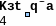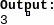Trên thực tế có nhiều bài toán liên quan tới một tập các đối tượng và những mối liên hệ giữa chúng, đòi hỏi toán học phải đặt ra một mô hình biểu diễn một cách chặt chẽ và tổng quát bằng ngôn ngữ ký hiệu, đó là đồ thị. Những ý tưởng cơ bản của nó được đưa ra từ thế kỷ thứ XVIII bởi nhà toán học Thuỵ Sĩ Leonhard Euler, ông đã dùng mô hình đồ thị để giải bài toán về những cây cầu Konigsberg nổi tiếng.
Mặc dù Lý thuyết đồ thị đã được khoa học phát triển từ rất lâu nhưng lại có nhiều ứng dụng hiện đại. Đặc biệt trong khoảng vài mươi năm trở lại đây, cùng với sự ra đời của máy tính điện tử và sự phát triển nhanh chóng của Tin học, Lý thuyết đồ thị càng được quan tâm đến nhiều hơn. Đặc biệt là các thuật toán trên đồ thị đã có nhiều ứng dụng trong nhiều lĩnh vực khác nhau như: Mạng máy tính, Lý thuyết mã, Tối ưu hoá, Kinh tế học v.v... Chẳng hạn như trả lời câu hỏi: Hai máy tính trong mạng có thể liên hệ được với nhau hay không?; hay vấn đề phân biệt hai hợp chất hoá học có cùng công thức phân tử nhưng lại khác nhau về công thức cấu tạo cũng được giải quyết nhờ mô hình đồ thị. Hiện nay, môn học này là một trong những kiến thức cơ sở của bộ môn khoa học máy tính.
Lý thuyết đồ thị là một phần quan trọng trong nội dung chương trình chuyên của môn Tin học tại các trường chuyên. Hầu như trong các đề thi học sinh giỏi đều có các bài toán liên quan đến lý thuyết đồ thị, do đó để học sinh có được kết quả cao chúng ta cần trang bị cho các em một nền tảng tốt cũng như các kỹ thuật cài đặt các bài toán cơ bản của lý thuyết đồ thị.
Tuy nhiên, lý thuyết đồ thị là một môn học cần tốn nhiều thời gian để truyền đạt, có một số vấn đề thì cần thiết cho học sinh trong các kỳ thi, một số khác không cần thiết, đặc biệt là một số vấn đề cần chứng mình, các định lý. Mặt khác một số vấn đề lại phải được trang bị sâu nhằm giúp học sinh giải quyết tốt vấn đề trong các đề thi lại không có trong nhiều tài liệu lý thuyết đồ thị cổ điển. Những vấn đề đó thường liên quan đến ứng dụng của lý thuyết đồ thị để giải quyết các bài toán thực tế.Một vấn đề khó khăn mà giáo viên gặp phải là quỹ thời gian của chúng ta rất ít mà nội dung giảng dạy nhiều. Do đó vấn đề chọn lựa những chuyên đề nào dạy và dạy đến đâu, những vấn đề nào định hướng cho học sinh tự học cần phải đặt ra cho Giáo viên giảng dạy các lớp chuyên Tin học và các đội tuyển chuẩn bị cho các kỳ thi Học sinh giỏi.
Trong phạm vi một chuyên đề, không thể nói kỹ và nói hết những vấn đề của lý thuyết đồ thị mà chỉ giới thiệu các bài toán cơ bản của Lý thuyết đồ thị trong Tin học cùng với phương pháp truyền đạt cho học sinh. Tập bài giảng này sẽ xem xét lý thuyết đồ thị dưới góc độ người lập trình, tức là khảo sát những thuật toán cơ bản nhất có thể dễ dàng cài đặt trên máy tính một số ứng dụng của nó. Các khái niệm trừu tượng và các phép chứng minh sẽ được diễn giải một cách hình thức cho đơn giản và dễ hiểu chứ không phải là những chứng minh chặt chẽ dành cho người làm toán. Ngoài ra cũng cung cấp một số bài tập trên mạng đã được phân loại thành các dạng giúp giáo viên có nguồn bài tập cung cấp cho học sinh sau khi giảng dạy các chuyên đề. Lời giải của các bài tập được cung cấp dưới dạng chương trình.
Mục đích
Trang bị cho học sinh các kiến thức cơ bản cần thiết về đồ thị để giải quyết các bài toán thi học sinh giỏi.
Các phương pháp tìm kiếm trên đồ thị
Chu trình Ơle và Hammilton
Cây Khung
Đường đi Ngắn nhất
Luồng trên mạng
Bài tập theo chủ đề
Các bài toán đồ thị trong các kỳ thi Quốc gia
Chương trình giải
Nội dung các bài giảng từ phần 1 tới phần 6 được soạn trên slide trong file đính kèm
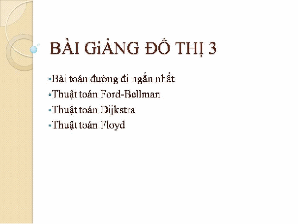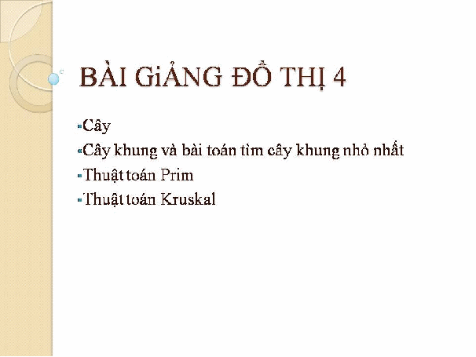
Trong một số nước châu Á, 8 và 6 được coi là những chữ số may mắn. Bất cứ số nguyên nào chỉ chứa chữ số 8 và 6 được coi là số may mắn, ví dụ 6, 8, 66, 668, 88, 886 …. Nguyên là một học sinh rất thích toán. Nguyên thích các số may mắn nhưng chỉ thích các số có dạng
S = 8…86…6
trong đó S có ít nhất một chữ số và chữ số 6 và 8 không nhất thiết phải đồng thời xuất hiện. Ví dụ, 8, 88, 6, 66, 86, 886, 8866 … là các số có dạng S.
Cho trước một số nguyên dương X (1 < X < 10 000), Nguyên muốn tìm số may mắn nhỏ nhất dạng S, có không quá 200 chữ số và chia hết cho X.
Nhiệm vụ của bạn là viết một chương trình tìm số đó cho Nguyên.
Dữ liệu vào
Dữ liệu vào gồm nhiều bộ dữ liệu tương ứng với nhiều test. Dòng đầu tiên chứa một số nguyên dương không lớn hơn 20 là số lượng các bộ dữ liệu. Các dòng tiếp theo chứa các bộ dữ liệu.
Trên mỗi dòng tiếp theo chứa một số nguyên X tương ứng với mỗi bộ dữ liệu.
Dữ liệu ra
Với mỗi bộ dữ liệu, ghi ra trên một dòng số may mắn dạng S nhỏ nhất chia hết cho X. Trường hợp không tồn tại số S có không quá 200 chữ số như vậy, ghi -1.
Ví dụ
LUCKYNUM.INP
LUCKYNUM.OUT
4
6
8
43
5
6
8
86
-1
Xét bàn cờ vuông kích thước n×n. Các dòng được đánh số từ 1 đến n, từ dưới lên trên. Các cột được đánh số từ 1 đến n từ trái qua phải.
Ô nằm trên giao của dòng i và cột j được gọi là ô (i,j). Trên bàn cờ có m (0 ≤ m ≤ n) quân cờ. Với m > 0, quân cờ thứ i ở ô (ri, ci), i = 1,2,..., m. Không có hai quân cờ nào ở trên cùng một ô. Trong số các ô còn lại của bàn cờ, tại ô (p, q) có một quân tượng. Mỗi một nước đi, từ vị trí đang đứng quân tượng chỉ có thể di chuyển đến được những ô trên cùng đường chéo với nó mà trên đường đi không phải qua các ô đã có quân
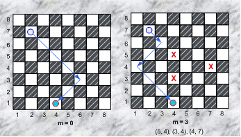
Cần phải đưa quân tượng từ ô xuất phát (p, q) về ô đích (s,t). Giả thiết là ở ô đích không có quân cờ. Nếu ngoài quân tượng không có quân nào khác trên bàn cờ thì chỉ có 2 trường hợp: hoặc là không thể tới được ô đích, hoặc là tới được sau không quá 2 nước đi (hình trái). Khi trên bàn cờ còn có các quân cờ khác, vấn đề sẽ không còn đơn giản như vậy.
Yêu cầu: Cho kích thước bàn cờ n, số quân cờ hiện có trên bàn cờ m và vị trí của chúng, ô xuất phát và ô đích của quân tượng. Hãy xác định số nước đi ít nhất cần thực hiện để đưa quân tượng về ô đích hoặc đưa ra số -1 nếu điều này không thể thực hiện được.
Dòng đầu tiên chứa 6 số nguyên n, m, p, q, s, t.
Nếu m > 0 thì mỗi dòng thứ i trong m dòng tiếp theo chứa một cặp số nguyên ri , ci xác định vị trí quân thứ i.
Hai số liên tiếp trên cùng một dòng được ghi cách nhau ít nhất một dấu cách.
Gồm 1 dòng duy nhất là số nước đi tìm được
QBBISHOP.INP |
QBBISHOP.OUT |
|
8 3 7 2 1 4 5 4 3 4 4 7 |
3 |
Trong tất cả các test: 1 ≤ n ≤ 200. Có 60% số lượng test với n ≤ 20.
Bessie rất yêu bãi cỏ của mình và thích thú chạy về chuồng bò vào giờ vắt sữa buổi tối.
Bessie đã chia đồng cỏ của mình là 1 vùng hình chữ nhật thành các ô vuông nhỏ với R (1 <= R <= 100) hàng và C (1 <= C <= 100) cột, đồng thời đánh dấu chỗ nào là cỏ và chỗ nào là đá. Bessie đứng ở vị trí R_b,C_b và muốn ăn cỏ theo cách của mình, từng ô vuông một và trở về chuồng ở ô 1,1 ; bên cạnh đó đường đi này phải là ngắn nhất.
Bessie có thể đi từ 1 ô vuông sang 4 ô vuông khác kề cạnh.
Dưới đây là một bản đồ ví dụ [với đá ('*'), cỏ ('.'), chuồng bò ('B'), và Bessie ('C') ở hàng 5, cột 6] và một bản đồ cho biết hành trình tối ưu của Bessie, đường đi được dánh dấu bằng chữ ‘m’.
Bản đồ Đường đi tối ưu
1 2 3 4 5 6 <-cột 1 2 3 4 5 6 <-cột
1 B . . . * . 1 B m m m * .
2 . . * . . . 2 . . * m m m
3 . * * . * . 3 . * * . * m
4 . . * * * . 4 . . * * * m
5 * . . * . C 5 * . . * . m
Bessie ăn được 9 ô cỏ.
Cho bản đồ, hãy tính xem có bao nhiêu ô cỏ mà Bessie sẽ ăn được trên con đường ngắn nhất trở về chuồng (tất nhiên trong chuồng không có cỏ đâu nên đừng có tính nhé)
Dòng 1: 2 số nguyên cách nhau bởi dấu cách: R và C
Dòng 2..R+1: Dòng i+1 mô tả dòng i với C ký tự (và không có dấu cách) như đã nói ở trên.
Dòng 1: Một số nguyên là số ô cỏ mà Bessie ăn được trên hành trình ngắn nhất trở về chuồng.
VMUNCH.INP |
VMUNCH.OUT |
|
5 6 B...*. ..*... .**.*. ..***. *..*.C |
9 |
Bessie dự định cả ngày sẽ nhai cỏ xuân và ngắm nhìn cảnh xuân trên cánh đồng của nông dân John, cánh đồng này được chia thành các ô vuông nhỏ với R (1 <= R <= 100) hàng và C (1 <= C <= 100) cột. Bessie ước gì có thể đếm được số khóm cỏ trên cánh đồng.
Mỗi khóm cỏ trên bản đồ được đánh dấu bằng một ký tự ‘#‘ hoặc là 2 ký tự ‘#’ nằm kề nhau (trên đường chéo thì không phải). Cho bản đồ của cánh đồng, hãy nói cho Bessie biết có bao nhiêu khóm cỏ trên cánh đồng.
Ví dụ như cánh đồng dưới dây với R=5 và C=6:
.#....
..#...
..#..#
...##.
.#....
Cánh đồng này có 5 khóm cỏ: một khóm ở hàng đầu tiên, một khóm tạo bởi hàng thứ 2 và thứ 3 ở cột thứ 2, một khóm là 1 ký tự nằm riêng rẽ ở hàng 3, một khóm tạo bởi cột thứ 4 và thứ 5 ở hàng 4, và một khóm cuối cùng ở hàng 5.
Dòng 1: 2 số nguyên cách nhau bởi dấu cách: R và C
Dòng 2..R+1: Dòng i+1 mô tả hàng i của cánh đồng với C ký tự, các ký tự là ‘#’ hoặc ‘.’ .
Dòng 1: Một số nguyên cho biết số lượng khóm cỏ trên cánh đồng.
VBGRASS.INP |
VBGRASS.OUT |
|
5 6 .#.... ..#... ..#..# ...##. .#.... |
5 |
Cho hai từ x, y và một dãy hữu hạn các từ (w1, w2, ..., wk).
Phép toán p * q mang ý nghĩa là phép nối từ p với từ q, hay nói cách khác p * q là một từ mới tạo thành bằng cách viết từ q phía sau từ p. Ta cần kiểm tra xem hai từ x, y có thể tương đương hóa bằng cách sử dụng các từ trong dãy cho trước không.
Ví dụ: Từ abba và ab có thể tương đương hóa bằng cách sử dụng các từ trong dãy: baaabad aa badccaa cc. Ta cần nối vào từ abba các từ: aa và badccaa, và nối vào từ ab các từ baaabad, cc và aa theo thứ tự. Trong cả hai trường hợp, ta sẽ thu được cùng một từ: abbaaabadccaa.
Cho biết từ x, từ y và dãy từ w1, w2, ..., wk. Cho biết từ x và y có thể tương đương hóa bằng cách sử dụng các từ trong dãy cho trước được hay không? Nếu có thể, hãy tìm số lượng nhỏ nhất phép toán * cần sử dụng.
Dòng đầu tiên chứa một số nguyên dương k ≤ 40.
Dòng thứ hai và dòng thứ ba mô tả từ x và y.
K dòng tiếp theo mô tả dãy từ w1, w2, ..., wk, mỗi từ trên một dòng.
Mô tả của mỗi từ chứa một số nguyên cho biết độ dài của từ, theo sau bởi khoảng trắng và một chuỗi thể hiện từ đó.
Mỗi từ chỉ bao gồm các chữ cái Latin in thường và có độ dài không vượt quá 2000.
Tổng độ dài các từ không vượt quá 5000.
Nếu không tồn tại lời giải, in ra 'NIE'.
Nếu tồn tại lời giải, in ra một số nguyên dương, là số lượng nhỏ nhất các phép toán * cần để tương đương hóa hai từ x và y.
VWORDS.INP |
VWORDS.OUT |
|
4 4 abba 2 ab 7 baaabad 2 aa 7 badccaa 2 cc |
5 |
|
4 1 a 2 ab 2 bb 2 ab 2 ba 2 aa |
NIE |
Một TV có N phím bấm đánh số 1..N. Trước đây TV còn tốt, khi ấn 1 phím xuống mọi phím khác đều tắt và chỉ có phím vừa ấn là bật. Bây giờ TV đã cũ, khi ấn 1 phím,chỉ có 1 số phím khác tắt(nếu nó đang bật), các phím khác không đổi
Một phím dù đang bật hay tắt khi ta ấn nó thì phím này sẽ bật. Các phím bị nó tác động sẽ tắt nếu đang bật.
Bạn được cho biết kết quả bấm của mỗi phím và 1 hiện trạng của các phím. Hãy tìm 1 dãy bấm liên tiếp 1 số ít nhất phím sao cho cuối cùng chỉ còn lại phím K, 1 <= K <= N, là bật các phím còn lại đều tắt.
- Gồm 1 test duy nhất:
- Dòng đầu là 2 số nguyên N, K ( 3 ≤ N ≤ 20 )
- N dòng tiếp theo, dòng thứ i:
* Đầu tiên là số S ( số phím mà phím i tác động ) . Tiếp theo S số là dãy phím mà phím i tác động khi bật nó
- Dòng cuối là N số 0 or 1 mô tả hiện trạng bàn phím đang tắt or bật
- Gồm 1 số nguyên duy nhất là số lần bấm phím ít nhất. Nếu ko có đáp án ghi ra -1
LEM2.INP |
LEM2.OUT |
|
3 3 2 2 3 2 1 3 2 1 2 1 1 0 |
1 |
|
4 3 3 2 3 4 1 1 1 1 0 0 1 0 1 |
2 |
Nhân dịp Tết sắp đến công ty Jelly-for-Kids quyết định tăng cường việc quảng bá sản phẩm đến người tiêu dùng. Vì thế giám đốc marketing, ông Fruit-Jelly muốn gửi đi số lượng nhân viên tối đa có thể, làm nhiệm vụ tiếp thị tại đại lý trong thành phố
Trong thành phố có m con đường, n đại lý bán kẹo (đánh số từ 1 đến n). Mỗi con đường chỉ nối trực tiếp giữa 2 đại lý, và được ký hiệu bằng chỉ số của 2 đại lý mà nó nối. Đồng thời, giữa 2 đại lý bất kỳ có không quá 1 con đường nối chúng
Ông Fruit-Jelly nghĩ rằng, ông ta sẽ quản lý nhân viên dễ hơn nếu xếp mỗi người tiếp thị trên những hành trình có tính chất thứ tự. Tức là những đại lý bán kẹo trên hành trình đó thỏa các điều kiện sau
Có đường nối trực tiếp giữa 2 đại lý liên tiếp nhau trên hành trình
Từ một đại lý bất kỳ trong hành trình có thể đi qua tất cả các đoạn đường trong hành trình đó rồi trở về nơi xuất phát mà không đi qua đoạn đường nào quá một lần
Hành trình phân công cho mỗi nhân viên phải có ít nhất một đoạn đường chưa có nhân viên nào khác đi tiếp thị.
Mỗi nhân viên chỉ di chuyển trên hành trình mà anh ta được phân công. Hãy tính số lượng nhân viên tối đa mà ông Fruit-Jelly có thể xếp việc, và hành trình cụ thể mà mỗi người được xếp.
Dòng đầu là 2 số tự nhiên N và M (N<=2000) (M<=5000)
Trong M dòng tiếp theo, mỗi dòng ghi 2 số nguyên mô tả một đoạn đường, mỗi đoạn đường được mô tả bởi chỉ số của 2 đại lý mà nó nối.
Dòng đầu tiên ghi Q là số lượng nhân viên tối đa tìm được
ADS.INP |
ADS.OUT |
|
5 6 1 2 2 4 4 5 3 5 1 3 2 3 |
2 |
Một lớp gồm N học sinh, mỗi học sinh cho biết những bạn mà học sinh đó có thể liên lạc được (chú ý liên lạc này là liên lạc một chiều : u có thể gửi tin tới v nhưng v thì chưa chắc đã có thể gửi tin tới u).
Thầy chủ nhiệm đang có một thông tin rất quan trọng cần thông báo tới tất cả các học sinh. Để tiết kiệm thời gian, thầy chỉ nhắn tin tới 1 số học sinh rồi sau đó nhờ các học sinh này nhắn lại cho tất cả các bạn mà các học sinh đó có thể liên lạc được, và cứ lần lượt như thế làm sao cho tất cả các học sinh trong lớp đều nhận được tin .
Hãy tìm một số ít nhất các học sinh mà thầy chủ nhiệm cần nhắn.
- Dòng đầu là N, M (N <= 800, M là số lượng liên lạc 1 chiều)
- Một số dòng tiếp theo mỗi dòng gồm 2 số u , v cho biết học sinh u có thể gửi tin tới học sinh v
- Gồm 1 dòng ghi số học sinh cần thầy nhắn tin.
MESSAGE.INP |
MESSAGE.OUT |
|
12 15 1 3 3 6 6 1 6 8 8 12 12 9 9 6 2 4 4 5 5 2 4 6 7 10 10 11 11 7 10 9 |
2 |
Ở thời loạn, giang hồ có rất nhiều cao thủ võ lâm, mỗi người trong số họ lại có những tuyệt chiêu. Nếu 2 cao thủ giang hồ so tài với nhau thì từ những sở trường và sở đoản của họ, ta có thể biết trước được cao thủ nào sẽ thắng. Những cao thủ đang có ở VNOI như conankudo, gothdn, kaiel, nahnhnahk, pirate... đang muốn thi tài để xem ai được chọn làm bộ ba cao thủ.
Để mưu nghiệp lớn, minh chủ võ lâm Nuga cần tìm ra một bộ ba trong số các cao thủ giang hồ hiện tại. Để các cao thủ này quy phục dưới trướng của mình và không làm phản, Nuga muốn bộ ba cao thủ này có thể khắc chế được nhau; điều này có nghĩa là nếu 3 cao thủ được chọn là A, B và C thì A phải thắng được B, B phải thắng được C và C phải thắng được A.
Bạn hãy giúp Nuga chọn ra một bộ ba cao thủ thoả mãn yêu cầu của ông.
Dòng đầu tiên ghi n là số cao thủ trên giang hồ (3 ≤ n ≤ 1000)
Tiếp theo là n dòng, mỗi dòng có n số. A[i,j] = 1 là người i thắng j. Dữ liệu luôn đảm bảo A[i,j] + A[j,i] = 1. A[i,i] = 0 với mọi i.
Ghi ra ba số nguyên A, B và C là thứ tự của ba cao thủ thoả mãn A thắng B, B thắng C và C thắng A. Trong trường hợp có nhiều cách lựa chọn, bạn chỉ cần chỉ ra một cách; trong trường hợp không có cách lựa chọn thoả mãn yêu cầu, ghi ra ba số -1.
NKTRIO.INP |
NKTRIO.OUT |
|
5 0 1 1 1 0 0 0 1 1 0 0 0 0 0 1 0 0 1 0 0 1 1 0 1 0 |
2 3 5 |
|
3 0 1 1 0 0 1 0 0 0 |
-1 -1 -1 |
Có n máy tính đánh số từ 1 đến n và m dây cáp mạng,giữa 2 máy tính có thể có một hoặc nhiều đường dây cáp mạng nối chúng,không có cáp mạng nối một máy với chính nó.Hai máy tính có thể truyền dữ liệu cho nhau nếu có đường cáp nối trực tiếp giữa chúng hoặc truyền qua một số máy trung gian.
Một tập S các máy tính được gọi là hệ thống an toàn nếu dù một máy tính bất kỳ bị tấn công (do sự tò mò của người dân :-(,cứ thích truy cập và hack những trang cấm :-( ) thì trong số những máy tính còn lại,những máy tính thuộc tập S vẫn có thể truyền được dữ liệu cho nhau. Xác định số lượng lớn nhất có thể các máy tính của tập S
-Dòng 1 chứa 2 số nguyên n,m(1<=n<=30.000,0<=m<=100.000)
-m dòng tiếp theo ghi thông tin về các dây cáp mạng,gồm 2 chỉ số của 2 máy được dây đó nối trực tiếp
Ghi một số nguyên duy nhất là số lượng máy tính lớn nhất tìm đc
|
SAFENET2.INP |
SAFENET2.OUT |
|
8 10 |
4 |
Một vòng đua xe đạp được tổ chức trên N thành phố, đánh số từ 1 đến N. Có M đường nối (một chiều) giữa các thành phố. Vòng đua bắt đầu từ thành phố 1 và kết thúc tại thành phố 2.
Hỏi có bao nhiêu cách tổ chức các vòng đua? (Biết hai vòng đua là khác nhau nếu chúng không sử dụng các tuyến đường như nhau)
Dòng 1: N, M
M dòng tiếp theo: mỗi dòng chứa hai số nguyên A, B, cho biết có một đường nối giữa thành phố A và thành phố B
Các thành phố có thể nối với nhau bởi nhiều hơn một con đường
Gồm 1 dòng duy nhất: số cách tổ chức các vòng đua. Nếu kết qủa có nhiều hơn 9 chữ số, chỉ cần in ra 9 chữ số cuối cùng. Nếu có vô số cách tổ chức các đường đua, in ra “inf”.
1 ≤ N ≤ 104
1 ≤ M ≤ 105
|
BIC.INP |
BIC.OUT |
|
8 14 6 7 6 8 7 5 5 2 5 3 4 8 1 6 5 2 7 5 6 4 1 4 5 2 7 4 8 3 |
6 |
|
2 2 1 2 2 1 |
inf |
Đất nước Delta là quốc đảo lớn trên thế giới. Đất nước gồm N đảo nhỏ được đánh số từ 1 đến N. Việc đi lại giữa các đảo là rất khó khăn. Vì kinh tế còn rất kém phát triển, nhà nước phải khó khăn lắm mới mở được N – 1 tuyến phà biển để người dân người dân có thể đi lại được giữa hai đảo bất kì. Cách đây không lâu, đất nước mới nhận được sự đầu tư lớn của các nước tư bản. Nhà vua quyết định xây mới K cây cầu để thay cho K tuyến phà. Các cây cầu mới được xây dựng sẽ nối liền hai đảo mà trước đây có tuyến phà nối trực tiếp. Nhà vua muốn tính toán để chọn K tuyến phà nào để xây thành cầu sau cho tổng thời gian để đi lại giữa mọi cặp đỉnh là nhỏ nhất. Tức là: 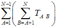đạt giá trị nhỏ nhất. Trong đo TA B là thời gian đi từ đảo A đến đảo B. Bạn hãy giúp nhà Vua tính toán chọn ra K trong số N - 1 tuyến phà để thay thế bằng cầu.
Dòng thứ nhất ghi 4 số nguyên N, K, VP, VC trong đó VP là vận tốc nếu đi bằng phà và VC là vận tốc nếu đi bằng cầu. VP và VC có đơn vị là m/s
N – 1 dòng tiếp theo, mỗi dòng ghi 3 số U V L thể hiện giữa đảo U và đảo V đã có một tuyến phà, và khoảng cách giữa U và V là L mét.
In ra K số là số hiệu của tuyến phà cần được thay thế bằng cầu.
1 ≤ K < N ≤ 10 000
1 ≤ VP, VC ≤ 100 000
1 ≤ LU V ≤ 106
Thời gian: 1s/test
6 2 1 2
1 2 5
3 2 6
1 4 4
4 6 4
Trùm khủng bố Bin Laden trốn trong 1 căn hầm được đào sâu xuống mặt đất M tầng, mỗi tầng có N phòng. Các phòng được ngăn cách bằng các cửa rất khó phá. Các phòng có cửa xuống phòng ngay phía dưới và 2 phòng ở 2 bên. Từ trên mặt đất có N cửa xuống N phòng tầng -1. Bin Laden ở tầng dưới cùng (tầng -M) phòng thứ N (phòng ở bên phải nhất). Mỗi cửa được làm bằng một kim loại khác nhau với độ dày khác nhau nên việc phá cửa cần thời gian khác nhau.
Bạn hãy tìm cách đi từ mặt đất xuống phòng của Bin Laden nhanh nhất không hắn thoát mất.
Dữ liệu
Dòng 1 ghi M và N
Dòng 2 đến 2M + 1, dòng chẵn ghi N số, dòng lẻ ghi N - 1 số là chi phí để phá cửa.
Kết quả
Ghi ra 1 số là thời gian nhỏ nhất để đến được phòng của Bin Laden
Ví dụ
BINLADEN.INP
BINLADEN.OUT
4 2
99 10
1
10 99
1
99 10
1
10 99
1
44
+--99--+--10--+
| | |
| 1 |
| | |
+--10--+--99--+
| | |
| 1 |
| | |
+--99--+--10--+
| | |
| 1 |
| | |
+--10--+--99--+
| | |
| 1 |
| | |
+------+------+
Đi theo đường zigzac
Giới hạn
1 <= M <= 2222
1 <= N <= 10
Chi phí của các cánh cửa thuộc [0, 1000].
Một mặt bàn nằm ngang được chia làm lưới ô vuông, trong mỗi ô có ghi một số tự nhiên.
Cho 1 con xúc xắc nằm vừa vặn trên một ô của lưới. Mỗi mặt của xúc xắc là một số từ 1 đến 6. Ban đầu, mặt trước là số 1, mặt trên là số 2 và mặt bên phải là số 3, các mặt đối diện có tổng số là 7. Mỗi lần, con xúc xắc có thể lăn về phía trái, phải, trước, sau. Mỗi lần tiếp xúc với mặt bàn, ta mất một chi phí bằng số ghi trên ô mà xúc xắc đang nằm trên nhân với số trên mặt của xúc xắc đang tiếp xúc với mặt bàn.
Hãy tìm cách lăn từ một ô đến một ô khác trên mặt bàn để đạt chi phí nhỏ nhất.
Dòng đầu ghi 2 số M, N lần lượt là số dòng và số cột của lưới ô trên mặt bàn.
M dòng sau, mỗi dòng ghi N số nguyên không quá 100 là số ghi trên các ô lưới của mặt bàn. Các dòng được liệt kê theo thứ tự từ xa đến gần, các số trên mỗi dòng liệt kê từ trái sang phải.
Dòng cuối ghi 2 cặp số lần lượt là tọa độ (dòng, cột) của ô bắt đầu và ô kết thúc.
Ghi ra một số duy nhất là chi phí nhỏ nhất tìm được.
1 ≤ M,N ≤ 50.
3 3
1 2 3
4 5 6
7 8 9
Mạng lưới giao thông thành phố gồm n nút được đánh số từ 1 đến n và m đường một chiều nối các cặp nút. Để giảm được độ dài của đường đi ngắn nhất giữa hai nút trọng yếu s và t khác nhau, một danh sách gồm k đường hai chiều được đề xuất để xem xét xây dựng.
Nhiệm vụ của bạn là viết một chương trình để chọn ra một đường trong danh sách đề xuất trên để xây dựng sao cho độ dài đường đi ngắn nhất giữa s và t là nhỏ nhất.
Dữ liệu vào gồm nhiều bộ dữ liệu tương ứng với nhiều test. Dòng đầu tiên chứa một số nguyên dương không lớn hơn 20 là số lượng các bộ dữ liệu. Các dòng tiếp theo chứa các bộ dữ liệu.
Với mỗi bộ dữ liệu, dòng đầu tiên chứa năm số nguyên dương n (n ≤ 10 000), m (m ≤ 100 000), k (k < 300), s (1 ≤ s ≤ n), t (1 ≤ t ≤ n) cách nhau bởi dấu trống. Dòng thứ i trong m dòng tiếp theo chứa ba số nguyên dương di, ci, li cách nhau bởi dấu trống, trong đó li là độ dài ( 0< li ≤ 1000) của đường một chiều thứ i từ nút di đến nút ci. Dòng thứ j trong k dòng tiếp theo chứa ba số nguyên dương uj, vj và qj (qj ≤ 1000) cách nhau bởi dấu trống, trong đó qj là độ dài của đường hai chiều được đề xuất thứ j nối giữa hai nút uj và vj.
Với mỗi bộ dữ liệu, ghi ra trên một dòng độ dài nhỏ nhất có thể của đường đi ngắn nhất giữa hai nút trọng yếu sau khi xây dựng xong một đường hai chiều từ danh sách đề xuất. Trường hợp không có đường đi từ s đến t, ghi -1.
Dữ liệu vào
|
TRAFFICN.INP |
TRAFFICN.OUT |
|
1 4 5 3 1 4 1 2 13 2 3 19 3 1 25 3 4 17 4 1 18 1 3 23 2 3 5 2 4 25 |
35 |
Có N thành phố 1..N nối bởi các con đường một chiều. Mỗi con đường có hai giá trị: độ dài và chi phí phải trả để đi qua. Bob ở thành phố 1. Bạn hãy giúp Bob tìm đường đi ngắn nhất đến thành phố N, biết rằng Bob chỉ có số tiền có hạn là K mà thôi.
Dòng đầu tiên ghi t là số test. Với mỗi test, dòng đầu ghi K (0 ≤ K ≤ 10000). Dòng 2 ghi N, 2 ≤ N ≤ 100. Dòng 3 ghi R, 1 ≤ R ≤ 10000 là số đường nối. Mỗi dòng trong N dòng sau ghi 4 số nguyên S, D, L, T mô tả một con đường nối giữa S và D với độ dài L ( 1 ≤ L ≤ 100) và chi phí T (0 ≤ T ≤ 100). Lưu ý có thể có nhiều con đường nối giữa hai thành phố.
Với mỗi test, in ra độ dài đường đi ngắn nhất từ 1 đến N mà tổng chi phí không quá K. Nếu không tồn tại, in ra -1.
|
ROADS.INP |
ROADS.OUT |
|
2 5 6 7 1 2 2 3 2 4 3 3 3 4 2 4 1 3 4 1 4 6 2 1 3 5 2 0 5 4 3 2 0 4 4 1 4 5 2 1 2 1 0 2 3 1 1 3 4 1 0 |
11 -1 |
Bessie, luôn luôn muốn cuộc sống của mình tốt hơn , đã thấy rõ rằng cô ta thật sự rất thích ghé thăm F (1 <= F <= P) cánh đồng yêu thích F_i trong tổng số P (1 <= P <= 500;1 <= F_i <= P) cánh đồng (được đánh số từ 1->P) thuộc sơ hữu của nông dân John.
Bessie biết rằng cô ấy có thể xác định được C (1 <= C< = 8000) con đường hai chiều (được đánh số 1 .. C) kết nối tất cả các cánh đồng trong toàn bộ nông trại. Ứng với mỗi con đường P_i là thời gian đi T_i (1 <= T_i <= 892) và nối 2 cánh đồng a_i và b_i (1 <= a_i <= P; 1 <= b_i <= P).
Bessie muốn tìm cánh đồng tốt nhất để ngủ thỏa mãn bình quân thời gian để đi đến F cánh đồng yêu thích của cô ta là nhỏ nhất.
Ví dụ, hãy xem xét một nông trang được trình bày như một bản đồ dưới đây , nơi * 'd là cách đồng được yêu thích.Các số trong ngoặc là thời gian tương ứng để di chuyển giữa 2 cánh đồng .
1 *-- [4] - 2 - [2] - 3
| |
[3] [4]
| |
4 - [3] - 5 - [1] --- 6 --- [6] --- 7 - [7] - 8 *
| | | |
[3] [2] [1] [3]
| | | |
13 * 9 - [3] - 10 *-- [1] - 11 *-- [3] - 12 *
Bảng sau đây cho thấy các khoảng cách trung bình nếu nghỉ tại các cánh đồng 4, 5, 6, 7, 9, 10, 11, và 12: 4 7 16 5 6 9 3 46/6 = 7.67 5 10 13 2 3 6 6 40/6 = 6.67 6 11 12 1 2 5 7 38/6 = 6.33 7 16 7 4 3 6 12 48/6 = 8.00 9 12 14 3 4 7 8 48/6 = 8.00 10 12 11 0 1 4 8 36/6 = 6.00 ** BEST 11 13 10 1 0 3 9 36/6 = 6.00 12 16 13 4 3 0 12 48/6 = 8.00
Kết quả tối ưu là cánh đồng 10
Dòng 1: 3 số nguyên P,F,C
Dòng 2..F+1: Dòng i+2 chứa 1 số Nguyên F_i
Dòng F+2..C+F+1 : Mỗi dòng chứa 3 số Nguyên a_i, b_i, F_i mô tả 1 con đường 2 chiều là thời gian di chuyển giữa chúng.
Gồm 1 dòng duy nhất là cánh đồng được chọn . nếu có nhiều kết quả , chọn cánh đồng có chỉ số nhỏ nhất !
13 6 15
11
13
10
12
8
1
2 4 3
7 11 3
10 11 1
4 13 3
9 10 3
2 3 2
3 5 4
5 9 2
6 7 6
5 6 1
1 2 4
4 5 3
11 12 3
6 10 1
Cho tập số nguyên A gồm n phần tử, A={a1, a2,..., an}. Số k được gọi là phụ thuộc vào tập A, nếu k được tạo thành bằng cách cộng các phần tử của tập A(mỗi phần tử có thể cộng nhiều lần).
Ví dụ cho A={2,5,7}. Các số như 2, 4(2+2), 12(5+7 hoặc 2+2+2+2+2) được gọi là phụ thuộc vào tập A. Số 0 cũng gọi là phụ thuộc vào tập A.
Cho một dãy B, hãy kiểm tra xem bi có phải là số phụ thuộc vào tập A hay không .
Dòng đầu tiên chứa số nguyên n (1 ≤ n ≤ 5000).
N dòng tiếp theo chứa các phân tử của tập A, a1 < a2 < ... < an (1 ≤ ai ≤ 50000 ).
Dòng thứ N+2 chứa số nguyên m (1 ≤ m ≤ 10000 ).
M dòng tiếp theo chứa dãy số nguyên b1, b2, ..., bm (0 ≤ bi ≤ 1000000000 ).
Gồm m dòng, dòng thứ i ghi ra TAK nếu bi là số phụ thuôc vào tập A và NIE nếu không phải là số phụ thuộc.
|
SUMS.INP |
SUMS.OUT |
|
3 2 5 7 6 0 1 4 12 3 2 |
TAK NIE TAK TAK NIE TAK |
Theo thống kê cho biết mức độ tăng trưởng kinh tế của nước Peace trong năm 2006 rất đáng khả quan. Cả nước có tổng cộng N thành phố lớn nhỏ được đánh số tuần tự từ 1 đến N phát triển khá đồng đều. Giữa N thành phố này là một mạng lưới gồm M đường đi hai chiều, mỗi tuyến đường nối 2 trong N thành phố sao cho không có 2 thành phố nào được nối bởi quá 1 tuyến đường. Trong N thành phố này thì thành phố 1 và thành phố N là 2 trung tâm kinh tế lớn nhất nước và hệ thống đường đảm bảo luôn có ít nhất một cách đi từ thành phố 1 đến thành phố N.
Tuy nhiên,cả 2 trung tâm này đều có dấu hiệu quá tải về mật độ dân số. Vì vậy, đức vua Peaceful quyết định chọn ra thêm một thành phố nữa để đầu tư thành một trung tâm kinh tế thứ ba. Thành phố này sẽ tạm ngưng mọi hoạt động thường nhật, cũng như mọi luồng lưu thông ra vào để tiến hành nâng cấp cơ sở hạ tầng. Nhưng trong thời gian sửa chữa ấy, phải bảo đảm đường đi ngắn nhất từ thành phố 1 đến thành phố N không bị thay đổi, nếu không nền kinh tế quốc gia sẽ bị trì trệ.
Vị trí và đường nối giữa N thành phố được mô tả như một đồ thị N đỉnh M cạnh. Hãy giúp nhà vua đếm số lượng thành phố có thể chọn làm trung tâm kinh tế thứ ba sao cho thành phố được chọn thỏa mãn các điều kiện ở trên
Dòng đầu tiên ghi 2 số nguyên dương N và M là số thành phố và số tuyến đường.
Dòng thứ i trong số M dòng tiếp theo ghi 3 số nguyên dương xi, yi và di với ý nghĩa tuyến đường thứ i có độ dài di và nối giữa 2 thành phố xi, yi.
Dòng đầu tiên ghi số tự nhiên S là số lượng các thành phố có thể chọn làm trung tâm kinh tế thứ ba.
S dòng tiếp theo, mỗi dòng ghi 1 số nguyên dương là số thứ tự của thành phố được chọn ( In ra theo thứ tự tăng dần )
CENTRE28.INP |
CENTRE28.OUT |
|
6 6 1 2 1 2 3 1 3 6 1 1 4 100 4 5 100 5 6 100 |
2 4 |
2 ≤ N ≤ 30000
1 ≤ M ≤ 100000
1 ≤ di ≤ 1000
Cho
đơn đồ thị vô hướng N đỉnh và M cạnh, trọng số các cạnh đều nguyên dương. Có 2
loại câu hỏi :
0 u v : Cho biết đường đi ngắn nhất từ u tới v có độ dài là
bao nhiêu.
1 u v : Hãy chỉ ra 1 đường đi ngắn nhất từ u => v
Bài cơ
bản này nhằm kiểm tra kỹ năng xây dựng các module chương trình con dành cho truy
vết 1 cách hợp lý, sử dụng nhuần nhuyễn chương trình con, lời gọi hàm .
Download test và solution tại đây
Dòng 1 : 3 số nguyên N , M , K . ( 1 ≤ N ≤ 100 , 1 ≤ M ≤ N*(N-1)/2 , 1
≤ K ≤ 1000 )
M dòng tiếp theo , dòng thứ i gồm 3 số nguyên dương u , v , c
cho biết cạnh (u,v) có trọng số là c ( 1 ≤ c ≤ 10000 )
K dòng tiếp theo là K
câu hỏi , dòng thứ j sẽ có định dạng như đã nêu ở trên .
Ứng với mỗi câu hỏi trong K câu hỏi thì ta phải trả lời trên mỗi dòng
như sau .
Câu hỏi 0 u v : Ghi ra 1 số nguyên duy nhất là độ dài đường đi
ngắn nhất từ u -> v.
Câu hỏi 1 u v : Ghi ra số đầu tiên là số X là số đỉnh
trên đường đi ngắn nhất này , tiếp đó ghi ra X số là chỉ số các đỉnh theo thứ tự
xuất hiện trên hành trình .
3 3 2
1 2 3
2 3 1
1 3 5
0 1 2
3
3 1 2 3
Một mạng giao thông gồm N nút giao thông, và có M đường hai chiều nối
một số cặp nút, thông tin về một đường gồm ba số nguyên dương u, v là tên hai
nút đầu mút của đường, và l là độ dài đoạn đường đó. Biết rằng hai nút giao
thông bất kì có không quá 1 đường hai chiều nhận chúng làm hai đầu mút.
Cho
hai nút giao thông s và f, hãy tìm hai đường đi nối giữa s với f sao cho hai
trên hai đường không có cạnh nào được đi qua hai lần và tổng độ dài 2 đường đi
là nhỏ nhất.
-
Dòng đầu ghi N, M (N ≤ 100)
- Dòng thứ 2 ghi hai số s, f.
- M dòng tiếp
theo, mỗi dòng mô tả một đường gồm ba số nguyên dương u, v, l.
- Dòng đầu ghi T là tổng độ dài nhỏ nhất tìm được hoặc -1 nếu không tìm
được.
- Nếu tìm được, hai dòng sau, mỗi dòng mô tả một đường đi gồm: số đầu
là số nút trên đường đi này, tiếp theo là dãy các nút trên đường đi bắt đầu từ
s, kết thúc tại f.
Chú ý: Phạm vi tính toán trong vòng Longint.
5 8
1 5
1 2 1
1 4 8
2 3 5
2 4 1
3 5 1
4 3 8
4 5 1
5
3 1 3 5
Công ty MCA là một công ty vận tải nổi tiếng tại đất nước Peace, với mạng lưới hoạt động trong khắp cả nước. Sắp đến kỷ niệm 30 năm thành lập, giám đốc công ty quyết định mở một đợt khuyến mãi lớn cho tất cả các khách hàng. Cụ thể là công ty sẽ mở một số tuyến đường vận chuyển miễn phí cho khách hàng.
Mỗi tuyến đường như vậy sẽ xuất phát từ một thành phố, qua một số thành phố (không đi qua thành phố nào 2 lần) rồi quay về nơi xuất phát. Nếu tính chi phí vận chuyển trung bình trên từng tuyến đường thì chi phí chi ra cho đợt khuyến mãi này sẽ không nhỏ nên giám đốc cũng muốn các tuyến đường này thỏa điều kiện tổng độ dài đường đi chia cho tổng số con đường trong tuyến đường đó (gọi là chi phí của tuyết đường) là nhỏ nhất.
Cho một mạng lưới vận chuyển hàng của công ty MCA hãy tìm ra tuyến đường thích hợp nhất (thỏa cả 2 điều kiện trên) cho đợt khuyến mãi. Xuất ra chi phí của tuyến đường tìm được.
Dòng đầu tiên ghi hai số nguyên N và M là số thành phố và số con đường trong mạng lưới. ( 1 ≤ N ≤ 100, 1 ≤ M ≤ 9000 )
M dòng tiếp theo, mỗi dòng ghi ba số nguyên a b c với ý nghĩa có đường đi một chiều từ a đến b với độ dài là c. ( 1 ≤ c ≤ 223 )
Gồm 1 dòng duy nhất ghi một số thập phân với là chi phí nhỏ nhất. Nếu không tồn tại tuyến đường nào thỏa mãn ghi ra -1. ( ghi chính xác đến 2 chữ số sau dấu phẩy )
3 3
1 2 1
2 3 1
1.00
Một hệ thống n máy tính (các máy tính được đánh số từ 1 đến n) được nối lại thành một mạng bởi m kênh nối, mỗi kênh nối hai máy nào đó và cho phép truyền tin một chiều từ máy này đến máy kia. Ta gọi một mạch vòng của mạng đã cho là một dãy các máy tính và các kênh nối chúng có dạng:
u1, e1, u2, ...,ui, ei, ui+1, ..., uk-1, ek-1, uk, ek, u1
Trong đó u1, u2, ..., uk là các máy tính khác nhau trong mạng, ei – kênh truyền tin từ máy ui đến máy ui+1 (i = 1, 2, ..., k-1), ek là kênh truyền tin từ máy uk đến máy u1. Một kênh truyền tin trong mạng được gọi là kênh xung yếu nếu như bất cứ mạch vòng nào của mạng cũng đều chứa nó.
Yêu cầu: Hãy xác định tất cả các kênh xung yếu của mạng đã cho.
Dòng đầu tiên chứa 2 số nguyên dương n và m.
Dòng thứ i trong số m dòng tiếp theo mô tả kênh nối thứ i bao gồm hai số nguyên dương u i, vi cho biết kênh nối thứ i cho phép truyền tin từ máy ui đến máy vi.
Các số trên cùng một dòng được ghi cách nhau bởi dấu cách.
Dòng đầu tiên ghi số nguyên k là số lượng kênh xung yếu trong mạng đã cho. Ghi k = -1 nếu mạng không chứa kênh xung yếu.
Nếu k>0 thì mỗi dòng trong số k dòng tiếp theo ghi thông tin về một kênh xung yếu tìm được theo qui cách mô tả giống như trong file dữ liệu vào. Đồng thời các kênh được in ra theo thứ tự từ điển
2 2
1 2
2
1 2
2 1
Trong tất cả các test: n ≤ 1000, m ≤ 20000. Có 50% số lượng test với n ≤ 200.
Cho một đa đồ thị vô hướng N đỉnh, M cạnh, mỗi cạnh có 1 trọng số nguyên dương.
Yêu cầu: Hãy chọn ra một số cạnh sao cho đồ thị tạo bởi N đỉnh và các cạnh được chọn này đảm bảo liên thông giữa 3 đỉnh 1, 2, 3 và tổng trọng số của các cạnh được chọn là nhỏ nhất. Dữ liệu vào đảm bảo có phương án.
3 ≤ N ≤ 100
4 ≤ M ≤ 20000
Trọng số 1 cạnh ≤ 10000
Dòng đầu tiên gồm 2 số nguyên: N, M.
M dòng tiếp theo: dòng thứ i gồm 3 số nguyên dương U V C tương ứng là cạnh này nối liền đỉnh U với đỉnh V, trọng số là C.
Dòng 1: Chi phí nhỏ nhất.
Dòng 2: Số nguyên K là số cạnh chọn ra.
Ghi ra K số là chỉ số các cạnh đã chọn, các số ghi cách nhau ít nhất một dấu cách.
THREE.INP |
THREE.OUT |
|
3 4 1 2 1 2 3 4 1 3 2 1 2 3 |
3 2 1 3 |
Vua Peaceful vừa khai hoang một vùng đất để lập ra đất nước Peace, lúc đầu chỉ có N thành phố (được đánh số từ 1 đến N) và không có con đường nào.
Vua Peace chọn ra 4 thành phố đặc biệt để làm trung tâm kinh tế và 4 thành phố này phải được liên thông với nhau. Chi phí xây dựng các con đường không phải nhỏ vì thế nhà vua muốn sử dụng chi phí ít nhất để xây dựng các con đường sao cho 4 thành phố đặc biệt đó vẫn liên thông.
Bạn được biết chi phí ước tính để xây dựng một số con đường và bạn hãy chọn một số con đường để xây dựng để theo đúng ý nhà vua biết rằng luôn tồn tại ít nhất một phương án xây dựng đường sao cho 4 thành phố đặc biệt liên thông.
Dòng đầu tiên ghi số nguyên dương N là số lượng các thành phố.( 1 ≤ N ≤ 100 )
Dòng thứ hai ghi 4 số nguyên là số hiệu của 4 thành phố đặc biệt.
Trong một số dòng tiếp theo, mỗi dòng ghi 3 số nguyên u, v và c với ý nghĩa muốn xây dựng một con đường hai chiều nối trực tiếp giữa 2 thành phố u và v thì chi phí là c. ( 1 ≤ c ≤ 5000 )
Gồm 1 dòng duy nhất là tổng chi phí nhỏ nhất để xây dựng hệ thống đường.
QBBUILD.INP |
QBBUILD.OUT |
|
5 2 3 4 1 1 2 10 1 5 1 5 2 1 1 4 1 4 3 3 3 2 2 |
5 |
Một
mê cung gồm có N phòng và M hành lang nối các phòng, giữa hai phòng bất kì có
không quá một hành lang nối chúng.
Một người muốn khám phá mê cung, anh ta sẽ
xuất phát từ một phòng và đi dọc theo tất cả các hành lang sao cho mỗi hành lang
được đi qua đúng một lần, rồi lại trở về vị trí xuất phát. Mỗi hành lang có một
giá trị c cho biết khi đi qua nó thì năng lượng nhà thám hiểm sẽ cộng thêm với c
(c có thể âm hay dương). Nhà thám hiểm bắt đầu xuất phát với năng lượng bằng 0,
anh ta sẽ chết nếu sau khi đi hết một hành lang nào đó mà mức năng lượng nhỏ hơn
0.
Yêu cầu: Hãy giúp nhà thám hiểm tìm ra một hành trình an toàn thỏa mãn các yêu cầu đã đưa
ra.
Dòng 1 là 2 số nguyên N, M. ( 1 ≤ N ≤ 200 )
M dòng tiếp theo, dòng thứ i gồm 3 số nguyên u, v, c cho biết có 1 hành lang nối phòng u với phòng v và giá trị năng lượng là c. ( |c| ≤ 10000 ) .
Nếu có không có hành trình nào an toàn thì ghi ra -1. Ngược lại ghi ra M+1 số nguyên là chỉ số phòng trên đường đi. Từ phòng xuất phát, qua các phòng, hành lang rồi quay trở về phòng xuất phát.
MC.INP |
MC.OUT |
|
3 3 1 2 2 1 3 -1 2 3 -1 |
2 1 3 2 |
Một bưu tá ở vùng quê cần chuyển thư cho người dân ở các ngôi làng cũng như ở trên các con đường nối giữa các ngôi làng. Bạn cần giúp bưu tá tìm hành trình đi qua mỗi ngôi làng và mỗi con đường ít nhất một lần (dữ liệu vào đảm bảo một hành trình như vậy tồn tại). Tuy nhiên, mỗi hành trình còn được gắn với một chi phí. Người dân ở các ngôi làng đều muốn bưu tá đến làng mình càng sớm càng tốt. Vì vậy mỗi ngôi làng đã thỏa thuận với bưu điện, nếu làng i là làng thứ k phân biệt được thăm trên hành trình và k ≤ wi, làng i sẽ trả wi – k euros cho bưu điện. Nếu k > wi , bưu điện đồng ý trả k - wi euros cho ngôi làng. Ngoài ra, bưu điện còn trả bưu tá một euro khi đi qua mỗi con đường trên hành trình.
Có n ngôi làng, được đánh số từ 1 đến n. Bưu điện được đặt ở ngôi làng số một, do đó hành trình cần bắt đầu và kết thúc tại ngôi làng này. Mỗi ngôi làng được đặt ở giao điểm của hai, bốn, hoặc tám con đường. Có thể có nhiều đường nối giữa hai ngôi làng. Con đường có thể là một vòng nối một ngôi làng với chính nó.
Yêu cầu: Viết chương trình xác định một hành trình đi qua mỗi ngôi làng và mỗi con đường ít nhất một lần, sao cho tổng lợi nhuận của bưu điện là lớn nhất (hay tổng thiệt hại là bé nhất).
Dòng đầu tiên chứa 2 số nguyên n, m, cách nhau bởi khoảng trắng; n (1 ≤ n ≤ 200), là số ngôi làng và m là số con đường.
Mỗi dòng trong số n dòng sau chứa một số nguyên dương. Dòng thứ i+1 chứa số wi, 0 ≤ wi ≤ 1000, xác định chi phí được trả bởi làng i.
Mỗi dòng trong số m dòng sau chứa hai số nguyên dương cách nhau bởi khoảng trắng, mô tả một con đường nối hai ngôi làng.
Dòng đầu tiên chứa số nguyên dương k, độ dài của hành trình.
Dòng thứ hai theo chứa k+1 số cho biết các ngôi làng được thăm theo thứ tự trên hành trình, cách nhau bởi khoảng trắng, trong đó v1=vk+1=1.
NKPOS.INP |
NKPOS.OUT |
|
6 7 1 7 4 10 20 5 2 4 1 5 2 1 4 5 3 6 1 6 1 3 |
7 1 5 4 2 1 6 3 1 |
Cho đơn đồ thị vô hướng liên thông G = (V, E) gồm n đỉnh và m cạnh, các đỉnh được đánh số từ 1 tới n và các cạnh được đánh số từ 1 tới m. Hãy tìm cây khung nhỏ nhất của đồ thị G
Dòng 1: Chứa hai số n, m (1 <= n <= 10000; 1 <= m <= 15000)
M dòng tiếp theo, dòng thứ i có dạng ba số nguyên u, v, c. Trong đó (u, v) là chỉ số hai đỉnh đầu mút của cạnh thứ i và c trọng số của cạnh đó (1 <= u, v <= n; 0< = c <= 10000).
Gồm 1 dòng duy nhất: Ghi trọng số cây khung nhỏ nhất
QBMST.INP |
QBMST.OUT |
|
6 9 |
5 |
Singapore sẽ tổ chức một cuộc đua xe Công Thức 1 vào năm 2008. Trước khi cuộc đua diễn ra, đã xuất hiện một số cuộc đua về đêm trái luật. Chính quyền muốn thiết kế một hệ thống kiểm soát giao thông để bắt giữ các tay đua phạm luật. Hệ thống bao gồm một số camera đặt trên các tuyến đường khác nhau. Để đảm bảo tính hiệu quả cho hệ thống, cần có ít nhất một camera dọc theo mỗi vòng đua.
Hệ thống đường ở Singapore có thể được mô tả bởi một dãy các nút giao thông và các đường nối hai chiều (xem hình vẽ). Một vòng đua bao gồm một nút giao thông xuất phát, tiếp theo là đường đi bao gồm ít nhất 3 tuyến đường và cuối cùng quay trở lại điểm xuất phát. Trong một vòng đua, mỗi tuyến đường chỉ được đi qua đúng một lần, theo đúng một hướng.
Chi phí để đặt camera phụ thuộc vào tuyến đường được chọn. Các số nhỏ trong hình vẽ cho biết chi phí để đặt camera lên các tuyến đường. Các số lớn xác định các nút giao thông. Camera được đặt trên các tuyến đường chứ không phải tại các nút giao thông. Bạn cần chọn một số tuyến đường sao cho chi phí lắp đặt là thấp nhất đồng thời vẫn đảm bảo có ít nhất một camera dọc theo mỗi vòng đua.
Viết chương trính tìm cách đặt các camera theo dõi giao thông sao cho tổng chi phí lắp đặt là thấp nhất.
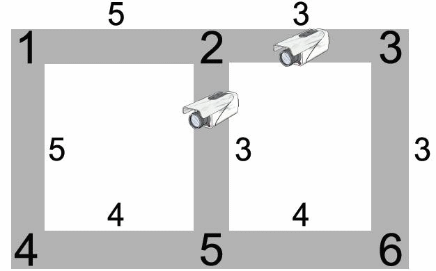
Dòng đầu tiên chứa 2 số nguyên n, m ( 1 ≤ n ≤ 10000, 1 ≤ m ≤ 100000) là số nút giao thông và số đường nối. Các nút giao thông được đánh số từ 1 đến n.
m dòng tiếp theo mô tả các đường nối, mỗi dòng bao gồm 3 số nguyên dương cho biết hai đầu mút của tuyến đường và chi phí lắp đặt camera. Chi phí lắp đặt thuộc phạm vi [1, 1000].
In ra 1 số nguyên duy nhất là tổng chi phí lắp đặt thất nhất tìm được.
NKRACING.INP |
NKRACING.OUT |
|
6 7 1 2 5 2 3 3 1 4 5 4 5 4 5 6 4 6 3 3 5 2 3 |
6 |
Nông dân John quyết định mang nước tới cho N (1 <= N <= 300) đồng cỏ của mình, để thuận tiện ta đánh số các đồng cỏ từ 1 đến N. Để tưới nước cho 1 đồng cỏ John có thể chọn 2 cách, 1 là đào ở đồng cỏ đó 1 cái giếng hoặc lắp ống nối dẫn nước từ những đồng cỏ trước đó đã có nước tới.
Để đào một cái giếng ở đồng cỏ i cần 1 số tiền là W_i (1 <= W_i <= 100,000). Lắp ống dẫn nước nối 2 đồng cỏ i và j cần 1 số tiền là P_ij (1 <= P_ij <= 100,000; P_ij = P_ji; P_ii=0).
Tính xem nông dân John phải chi ít nhất bao nhiêu tiền để tất cả các đồng cỏ đều có nước.
Dòng 1: Một số nguyên duy nhất: N
Các dòng 2..N + 1: Dòng i+1 chứa 1 số nguyên duy nhất: W_i
Các dòng N+2..2N+1: Dòng N+1+i chứa N số nguyên cách nhau bởi dấu cách; số thứ j là P_ij
Dòng 1: Một số nguyên duy nhất là chi phí tối thiểu để cung cấp nước cho tất cả các đồng cỏ.
FWATER.INP |
FWATER.OUT |
|
4 5 4 4 3 0 2 2 2 2 0 3 3 2 3 0 4 2 3 4 0 |
9 |
Có 4 đồng cỏ. Mất 5 tiền để đào 1 cái giếng ở đồng cỏ 1, 4 tiền để đào ở đồng cỏ 2, 3 và 3 tiền để đào ở đồng cỏ 4. Các ống dẫn nước tốn 2, 3, và 4 tiền tùy thuộc vào nó nối đồng cỏ nào với nhau.
Nông dân John có thể đào 1 cái giếng ở đồng cỏ thứ 4 và lắp ống dẫn nối đồng cỏ 1 với tất cả 3 đồng cỏ còn lại, chi phí tổng cộng là 3 + 2 + 2 + 2 = 9.
Nước Anpha đang lập kế hoạch xây dựng một thành phố mới và hiện đại. Theo kế hoạch, thành phố sẽ có N vị trí quan trọng, được gọi là N trọng điểm và các trọng điểm này được đánh số từ 1 tới N. Bộ giao thông đã lập ra một danh sách M tuyến đường hai chiều có thể xây dựng được giữa hai trọng điểm nào đó. Mỗi tuyến đường có một thời gian hoàn thành khác nhau.
Các tuyến đường phải được xây dựng sao cho N trọng điểm liên thông với nhau. Nói cách khác, giữa hai trọng điểm bất kỳ cần phải di chuyển được đến nhau qua một số tuyến đường. Bộ giao thông sẽ chọn ra một số tuyến đường từ trong danh sách ban đầu để đưa vào xây dựng sao cho điều kiện này được thỏa mãn.
Do nhận được đầu tư rất lớn từ chính phủ, bộ giao thông sẽ thuê hẳn một đội thi công riêng cho mỗi tuyến đường cần xây dựng. Do đó, thời gian để hoàn thành toàn bộ các tuyến đường cần xây dựng sẽ bằng thời gian lâu nhất hoàn thành một tuyến đường nào đó.
Yêu cầu: Giúp bộ giao thông tính thời gian hoàn thành các tuyến đường sớm nhất thỏa mãn yêu cầu đã nêu.
Dòng chứa số N và M (1 ≤ N ≤ 1000; 1 ≤ M ≤ 10000).
M tiếp theo, mỗi dòng chứa ba số nguyên u, v và t cho biết có thể xây dựng tuyến đường nối giữa trọng điểm u và trọng điểm v trong thời gian t. Không có hai tuyến đường nào nối cùng một cặp trọng điểm.
Một số nguyên duy nhất là thời gian sớm nhất hoàn thành các tuyến đường thỏa mãn yêu cầu đã nêu.
NKCITY.INP |
NKCITY.OUT |
|
5 7 1 2 2 1 5 1 2 5 1 1 4 3 1 3 2 5 3 2 3 4 4 |
3 |
Cho
đồ thị hai phía G = (X U Y, E); Các đỉnh của X ký hiệu là x1, x2, ..., xm, các
đỉnh của Y ký hiệu là y1, y2, ..., yn.
Một bộ ghép trên G là một tập các cạnh
thuộc E đôi một không có đỉnh chung.
Yêu cầu: Hãy tìm bộ ghép cực đại (có nhiều cạnh nhất) trên
G.
Chú
ý : Dùng Eof chứ không dùng
SeekEof.
• Dòng
1: Chứa hai số m, n (1 ≤ m, n ≤ 100)
• Các dòng tiếp, mỗi dòng chứa hai số
nguyên dương i, j cho biết thông tin về một cạnh (xi, yj) thuộc
E.
• Dòng
1: Ghi số cạnh trong bộ ghép cực đại tìm được (K).
• K dòng tiếp theo, mỗi
dòng ghi thông tin về một cạnh được chọn vào bộ ghép cực đại: Gồm 2 số u, v thể
hiện cho cạnh nối (xu, yv).
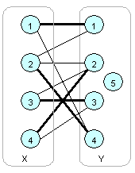
MATCH1.INP |
MATCH1.OUT |
|
4 5 1 1 1 4 2 1 2 2 2 4 3 2 3 3 4 2 4 3 |
4 1 1 2 4 3 3 4 2 |
Cho
đồ thị hai phía G = (X U Y, E); Các đỉnh của X ký hiệu là x1, x2, ..., xn, các
đỉnh của Y ký hiệu là y1, y2, ..., yn. Mỗi cạnh của G được gán một trọng số
không âm. Một bộ ghép đầy đủ trên G là một tập n cạnh thuộc E đôi một không có
đỉnh chung. Trọng số của bộ ghép là tổng trọng số các cạnh nằm trong bộ
ghép.
Ràng buộc: Luôn tồn tại ít nhất một bộ ghép đầy đủ trên
G.
Chú ý dùng Eof chứ không dùng
SeekEof
• Dòng
1: Chứa số n (1 ≤ n ≤ 200)
• Các dòng tiếp theo, mỗi dòng chứa 3 số nguyên
i, j, c cho biết có một cạnh (xi, yj) và trọng số cạnh đó là c (0 ≤ c ≤
200).
• Dòng
1: Ghi trọng số bộ ghép tìm được
• n dòng tiếp, mỗi dòng ghi hai số (u, v)
tượng trưng cho một cạnh (xu, yv) được chọn vào bộ ghép.
MATCH2.INP |
MATCH2.OUT |
|
4 1 1 0 1 2 0 2 1 0 2 4 2 3 2 1 3 3 0 4 3 0 4 4 9 |
3 1 1 2 4 3 2 4 3 |
Trong lý thuyết đồ thị, một cặp ghép hay tập cạnh độc lập của một đồ thị là một tập các cạnh không có đỉnh chung. Bài toán ghép cặp thường được quan tâm trong trường hợp đồ thị hai phía. Đồ thị đơn vô hướng G=(V,E) là một đồ thị hai phía nếu như tồn tại một cách phân hoạch tập đinh V thành hai tập V1, V2 sao cho mỗi cạnh thuộc E đều có dạng v1v2 với v1 thuộc V1, v2 thuộc V2. Một ví dụ đó là bài toán sắp xếp công việc. Giả sử có P người và J công việc, mỗi người có thể làm một số công việc nào đó. Ta mô hình bài toán bằng một đồ thị hai phía với P+J đỉnh. Nếu người pi có thể làm công việc ji thì có một cạnh giữa hai đỉnh pi và ji trên đồ thị.
Tìm một cặp ghép cực đại (còn được gọi là cặp ghép có lực lượng lớn nhất) trên một đồ thị hai phía G=(V=(X,Y), E) là một bài toán quen thuộc và đơn giản trong lý thuyết đồ thị. Định lý Konig chỉ ra rằng trong một đồ thị hai phía, kích thước của cặp ghép cực đại bằng kích thước của phủ đỉnh nhỏ nhất. Từ kết quả này, bài toán phủ đỉnh nhỏ nhất và bài toán tập độc lập lớn nhất trên đồ thị hai phía có thể giải được trong thời gian đa thức.
Bạn hãy thử giải quyết bài toán tìm cặp ghép cực đại trên đồ thị hai phía: cho biết đồ thị hai phía G=(V=(X,Y), E), hãy tìm cặp ghép cực đại (có nhiều cạnh nhất).
Dòng đầu tiên chứa hai số x, y, m (x, y ≤ 1000), theo thứ tự là số đỉnh thuộc tập X, tập Y của đồ thị và số cạnh nối.
m dòng tiếp theo mỗi dòng ghi hai số i, j cách nhau bởi một dấu cách thể hiện có cạnh nối giữa hai đỉnh xi, yj.
In ra kích thước của cặp ghép cực đại.
NKBM.INP |
NKBM.OUT |
|
4 5 9 1 1 1 4 2 1 2 2 2 4 3 2 3 3 4 2 4 3 |
4 |
Có n người, n việc (1 < n ≤ 200). Người thứ i thực hiện công viêc j mất C[i,j] đơn vị thời gian. Giả sử tất cả bắt đầu vào thời điểm 0, hãy tìm cách bố trí mỗi công việc cho mỗi người sao cho thời điểm hoàn thành công việc là sớm nhất có thể.
-
Dòng đầu: N
- Tiếp theo là ma trận C[i,j]. (thuộc kiểu
Integer)
- Ghi thời điểm sớm nhất hoàn thành.
ASSIGN1.INP |
ASSIGN1.OUT |
|
4 10 10 10 2 10 10 3 10 4 10 10 10 10 5 10 10 |
5 |
Có n cái hộp xếp theo vòng tròn đánh số 1..n (1 ≤ n ≤ 1000) theo chiều kim đồng hồ. Mỗi hộp chứa một số quả bóng, tổng số quả bóng không quá n.
Cần dịch chuyển các quả bóng sao cho mỗi hộp không chứa quá 1 quả. Mỗi bước, ta có thể di chuyển một quả bóng từ một hộp sang một trong hai hộp bên cạnh.
Tính số bước di chuyển ít nhất.
Dòng đầu tiên chứa t là số bộ test (t ≤ 20). Mỗi bộ test có dạng:
Dòng đầu tiên: n - số hộp.
Dòng thứ hai: n số nguyên không âm là số quả bóng trong các hộp
Với mỗi bộ test in ra số bước ít nhất cần thiết.
BOXES.INP |
BOXES.OUT |
|
1 12 0 0 2 4 3 1 0 0 0 0 0 1 |
19 |
IOI 2008 diễn ra trong n + 1 ngày, các bài toán của IOI được đánh số từ 1 tới n.(n+1) và được phân bố vào các ngày thi theo lịch sau (mỗi ngày thi có n bài toán):
Ngày 1: Các bài toán từ 1 tới n
Ngày 2: Các bài toán từ n + 1 tới 2n
...
Ngày i: Các bài toán từ (i - 1).n + 1 tới i.n
...
Ngày n+1: Các bài toán từ n.n + 1 tới n.(n+1)
Các bài thi có một trong k dạng, bài thứ j có dạng là rj (1 <= rj< = k)
Thể thức thi được thông báo cho mỗi đoàn như sau:
- Mỗi đoàn sẽ có n + 1 học sinh tham gia
- Hàng ngày, Ban tổ chức sẽ đưa một học sinh của đoàn đi tham quan thành phố, việc chọn học sinh nào cho đi tham quan là quyền của trưởng đoàn, nhưng phải đảm bảo điều kiện:
Cho đến khi IOI kết thúc, học sinh nào của đoàn cũng đã được đi tham quan thành phố. Như vậy mỗi ngày đoàn sẽ còn lại n học sinh tham gia thi, việc giao cho học sinh nào làm bài nào là quyền của phó đoàn nhưng mỗi học sinh chỉ được giao một bài và hai học sinh khác nhau sẽ phải nhận hai bài khác nhau.
Kết thúc IOI, điểm đồng đội của mỗi đoàn sẽ được tính bằng tổng điểm của tất cả các lời giải các bài toán đã cho.
Các thầy giáo trưởng, phó đoàn Việt Nam dự đoán rằng nếu học sinh thứ i của đoàn làm bài toán dạng j thì có thể thu được số điểm là cij (cij = 0 tương đương với lời dự đoán rằng học sinh thứ i không làm được bài toán dạng j).
Hỏi các thầy sẽ sắp xếp lịch thi đấu cho các học sinh như thế nào để theo dự đoán, đoàn Việt Nam sẽ thu được số điểm nhiều nhất có thể.
Dòng 1: Chứa hai số n, k (1 <= n <= 100; 1 <= k <= 1000)
Dòng 2: Chứa n.(n+1) số, số thứ p là rp.
Các dòng tiếp, mỗi dòng chứa ba số nguyên dương i, j, p cho biết một điều dự đoán của các thầy: học sinh thứ i có thể làm được bài toán dạng j và đạt được số điểm là p (=c[i, j]). (1 <= p <= 100)
Gồm 1 dòng duy nhất : Ghi điểm đồng đội mà theo dự đoán đoàn Việt Nam có thể đạt
IOI2008.INP |
IOI2008.OUT |
|
3 4 1 2 4 4 3 3 1 4 2 3 2 2 1 1 2 1 2 3 1 4 6 2 3 4 2 1 3 2 4 7 3 2 1 3 1 4 4 1 2 4 3 9 4 2 8 |
65 |
Trong chuyến phiêu lưu tìm kiếm những bảo bối tử thần, Harry cùng các bạn của cậu đã lạc vào một mê cung bí mật. Ngay khi họ vừa bước chân vào, các bức tường lập tức mọc lên bốn phía, chia mê cung thành N*N phòng có kích thước 1*1 và nhóm của Harry bị nhốt trong một số phòng. Mỗi phòng đều có 4 cánh cửa, mỗi chiếc nằm trên 1 bức tường của phòng đó.
Các con quái vật chỉ xuất hiện trong các phòng có Harry và các bạn của cậu. Số quái vật ở một phòng luôn luôn bằng số người trong phòng. Điều này có nghĩa là khi 1 người di chuyển từ phòng X sang phòng Y, thì ở phòng Y sẽ có thêm 1 con quái vật.
Để sống sót, buộc Harry và các bạn phải chiến đấu với lũ quái vật và tìm đường thoát ra ngoài. Thời gian để tiêu diệt 1 con quái vật ở phòng (I, J) là A[I, J]. (Đánh số các phòng từ trái sang phải, từ trên xuống dưới). Một người chỉ có thể cùng 1 lúc chiến đấu với 1 con quái vật, và bắt buộc phải tiêu diệt xong quái vật đó mới có thể chuyển sang phòng khác.
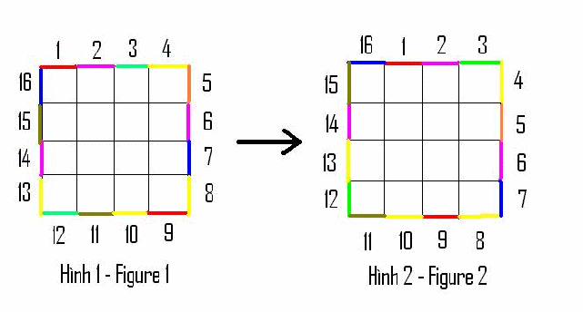Nhờ tấm bản đồ đạo tặc, Harry biết được những người bạn của mình đang ở phòng nào. Cậu cũng phát hiện ra rằng, mỗi phòng nhốt bạn mình đều được sơn bằng một màu riêng biệt, và các cánh cửa nằm trên 4 bức tường bao ngoài của mê cung cũng có nhiều màu sắc khác nhau. Bây giờ cậu cần phải hướng dẫn từng người chạy tới cánh cửa cùng màu với phòng nhốt người đó. Nhưng khi có một người thoát ra ngoài mê cung, thì ngay lập tức, quái vật trong mê cung sẽ hồi phục lại sức mạnh như ban đầu, và 4 bức tường của căn phòng bí mật sẽ quay 1 đơn vị theo chiều kim đồng hồ, làm các cánh cửa màu trên đó cũng quay theo. Hay nói cách khác, nếu ta đi dọc theo 4 bức tường của căn phòng bí mật theo chiều kim đồng hồ thì mỗi cánh cửa mà ta đi tới sẽ đổi sang màu cũ của cánh cửa ngay phía sau ta (Xem hình vẽ).
Do tình thế khó khăn nên chỉ khi một người thoát khỏi mê cung thì Harry mới hướng dẫn người tiếp theo. Bạn hãy giúp Harry hướng dẫn cho tất cả các bạn của mình thoát khỏi mê cung trong thời gian ngắn nhất!
(P/s: Nếu bạn hỏi Harry hướng dẫn cho các bạn mình bằng cách nào? Cậu ấy dùng thần chú “Sonorus!” (Âm vang) làm giọng nói của mình vang vọng khắp mê cung. :D)
Dòng đầu ghi 2 số nguyên dương N, K. Với N là kích thước của mê cung, K là số người trong nhóm bạn của Harry.
Trong I dòng tiếp theo, mỗi dòng ghi J số nguyên không âm. Số thứ J trên dòng I là A[I, J] thể hiện thời gian cần thiết để tiêu diệt quái vật trong phòng (I, J).
Trong K dòng tiếp, mỗi dòng ghi 1 bộ 3 số nguyên không âm I, J, C. Bộ số (I, J, C) trên dòng thứ X thể hiện rằng người bạn thứ X đang ở phòng (I, J) và phòng này được sơn màu C.
Dòng cuối cùng ghi 4*N số nguyên không âm, là màu của các cánh cửa trên 4 bức tường bao quanh mê cung, lần lượt theo chiều kim đồng hồ, bắt đầu từ cánh cửa ở bức tường phía trên của phòng nhỏ (1,1). (Thứ tự giống như trong hình 1)
Một số nguyên duy nhất là thời gian nhỏ nhất để tất cả mọi người trong nhóm bạn của Harry có thể thoát khỏi mê cung.
1 ≤ N ≤ 100
1 ≤ K ≤ 100, K ≤ N^2
0 ≤ C ≤ 100
0 ≤ A[I, J] ≤ 100
NHP.INP |
NHP.OUT |
|
3 2 2 2 2 0 2 0 1 0 2 1 2 2 2 1 2 2 2 2 2 2 2 1 1 2 1 1 2 |
3 |
FJ có N (1 ≤ N ≤ 50,000) cô bò và M (1 ≤ M ≤ 50,000) chú bò. Cho danh sách P (1 ≤ P ≤ 150,000) khả năng ghép đôi giữa các cô bò và chú bò, hãy tính số cặp lớn nhất có thể ghép được. Tất nhiên, một cô bò có thể ghép với tối đa là một chú bò và ngược lại.
Dòng đầu tiên chứa 3 số nguyên, N, M, và P. Mỗi dòng trong số P dòng tiếp theo chứa 2 số nguyên A (1 ≤ A ≤ N) và B (1 ≤ B ≤ M), thể hiện việc cô bò A có thể ghép được với chú bò B.
In ra một số nguyên thể hiện số cặp lớn nhất có thể đạt được.
FMATCH.INP |
FMATCH.OUT |
|
5 4 6 5 2 1 2 4 3 3 1 2 2 4 4 |
3 |
Cô bò 1 có thể được ghép với chú bò 2, cô bò 3 với chú bò 1, và cô bò 4 với chú bò 3.
Trong lý thuyết đồ thị, mạng luồng là một đồ thị có hướng, trong đó mỗi cạnh có một độ thông qua và một giá trị luồng. Lượng luồng trên mỗi cạnh không được vượt quá độ thông qua của cạnh đó. Lượng luồng đi vào một đỉnh phải bằng lượng luồng đi ra khỏi nó, trừ khi đó là đỉnh nguồn (có nhiều lượng luồng đi ra hơn), hay đỉnh đích (có nhiều lượng luồng đi vào hơn). Mạng luồng có thể dùng để mô hình hóa hệ thống đường giao thông, dòng chảy của chất lỏng trong ống, dòng điện trong mạch, hay bất kỳ các bài toán nào tương tự khi có sự di chuyển trong một mạng các nút.
Mô hình các ống dẫn nước bằng một mạng luồng. Mỗi ống nước có đường kính xác định nên chỉ cho phép một lưu lượng nước xác định chảy qua. Ở nơi giao điểm giữa các ống, lưu lượng nước đi vào phải bằng lưu lượng nước đi ra nếu không nước sẽ nhanh chóng bị thất thoát. Ta có một bồn nước, hay đỉnh phát, và một vòi nước, hay đỉnh thu. Một cách trực quan, giá trị luồng trên mạng chính là vận tốc nước chảy ra từ vòi. Luồng còn có thể mô hình sự lưu chuyển của người hay hàng hóa trên các mạng giao thông, dòng điện trong hệ thống phân phối,... Đối với các hệ thống mạng này, luồng đi vào các nút trung gian cần phải bằng luồng đi ra khỏi nút đó. Tính chất này cũng giống như định luật dòng điện Kirchhoff. Mạng luồng còn được ứng dụng trong sinh thái học: mạng luồng xuất hiện khi xem xét sự lưu chuyển chất dinh dưỡng và năng lượng giữa các nhóm khác nhau trong một mạng thức ăn. Các bài toán gắn với loại mạng sinh thái này hoàn toán khác với trường hợp mạng chất lỏng hay mạng giao thông.
Bài toán luồng cực đại trên mạng yêu cầu tìm một luồng tương thích có giá trị lớn nhất trong mạng luồng có một đỉnh phát và một đỉnh thu. Bài toán luồng cực đại trên mạng có thể xem như trường hợp đặc biệt của lớp các bài toán mạng phức tạp hơn, chẳng hạng như bài toán lưu thông. Định lý luồng cực đại-lát cắt hẹp nhất (max-flow min-cut theorem) chỉ ra giá trị luồng cực đại từ s đến t (đỉnh phát đến đỉnh thu) bằng giá trị của lát cắt s-t hẹp nhất trên mạng.
Bạn hãy thử giải quyết bài toán luồng cực đại trên mạng: cho một mạng luồng, hãy tìm giá trị luồng cực đại.
Dòng đầu tiên chứa 4 số nguyên dương n, m, s, t, (2 ≤ n ≤ 1000) tương ứng là số đỉnh, số cạnh của đồ thị, chỉ số của đỉnh phát và đỉnh thu.
m dòng tiếp theo, mỗi dòng có dạng ba số u, v, c cách nhau ít nhất một dấu cách thể hiện có cung u, v trong mạng với khả năng thông qua là c (1 ≤ c ≤ 106).
In ra một số duy nhất là giá trị của luồng cực đại trên mạng.
NHP.INP |
NHP.OUT |
|
3 2 2 2 2 0 2 0 1 0 2 1 2 2 2 1 2 2 2 2 2 2 2 1 1 2 1 1 2 |
3 |
Dữ liệu:
6 8 1 6
1 2 5
1 3 5
2 4 6
2 5 3
3 4 3
3 5 1
4 6 6
5 6 6
Kết qủa
9
Một mạng lưới gồm N thành phố, và một số đường một chiều nối các cặp
thành phố (giữa hai thành phố có thể có nhiều đường nối một chiều).
Quân
địch đang tập trung ở thành phố N, định tiến công ta ở thành phố 1, và chúng sẽ
tiến công trên tất cả các con đường chưa được bảo vệ để tiến vào thành phố 1. Bộ
chỉ huy ta cần xác định số quân ít nhất trên các con đường để chặn địch tiến về
thành phố 1.
Dòng
đầu ghi N (N ≤ 5000)
Các dòng tiếp theo cho đến hết file, mỗi dòng một tả 1
đường gồm u, v, s cho biết có đoạn đường một chiều từ u đến v, và phải cần ít
nhất s quân để chặn địch trên đường này. (s ≤ 65000)
Có không quá 10000
đường.
Số quân ít nhất cần điều động
NKFLOW.INP |
NKFLOW.OUT |
|
10 10 7 25050 6 1 12564 10 4 23916 5 1 61054 10 9 50950 9 1 35558 10 2 60941 3 1 22203 8 2 2853 5 7 31422 3 7 41491 8 7 27235 4 8 55965 8 6 41980 3 6 47707 2 3 45320 3 8 11237 7 6 38734 5 6 7561 3 5 8844 |
79169 |
Thế giới những năm 2077 hình thành nên 2 thái cực rõ ràng , các nước
hoặc là đi theo con đường Chủ Nghĩa Xã Hội hoặc là theo Tư Bản Chủ Nghĩa. Khởi
xướng nên các luồng tư tưởng này là 2 nước Lào và Campuchia . Lào và 1 số nước
thân Lào theo đường lối Xã Hội Chủ Nghĩa còn Campuchia và 1 số nước thân
Campuchia theo Tư Bản Chủ Nghĩa. Như ta đã biết nền kinh tế các năm trong tương
lai là nền kinh tế tri thức và của các mối quan hệ. Nếu trước đây 2 nước X và Y
có quan hệ kinh tế là Z tỉ đôla với nhau và giờ X theo CNXH còn Y theo TBCN thì
2 nước này sẽ cắt đứt mối quan hệ kinh tế với nhau , đối với nền kinh tế thế
giới thì thực sự là 1 tổn thất lớn , còn nếu 2 nước cùng đi theo cùng 1 con
đường chính trị thì mối quan hệ đó vẫn được duy trì . Tuy nhiên năm nay mới là
năm 2007 vì thế mới chỉ có Lào , các nước thân Lào là theo CNXH và Campuchia và
các nước thân Campuchia theo TBCN , còn lại các nước vẫn theo con đường trung
lập và tới năm 2077 họ mới chọn TBCN hay là XHCN.
Biết bạn rất giỏi lập
trình , các chuyên gia thuộc Liên Hợp Quốc muốn nhờ bạn hãy lập trình tính xem
tới năm 2077 thì trong tình huống tốt nhất thì Tổng Giá Trị Kinh Tế Toàn Cầu là
bao nhiêu ? Biết rằng Tổng Giá Trị Kinh Tế Toàn Cầu được tính bằng tổng giá trị
các mối quan hệ kinh tế giữa các nước trên thế giới .
Dòng 1 : Số nguyên dương N ( 1 ≤ N ≤ 200 ) là số lượng các quốc gia
trên thế giới , các quốc gia được đánh số thứ tự từ 1 -> N .
Dòng 2 : Số
nguyên dương L là các nước tính tới thời điểm hiện tại đang theo CNXH .
Dòng
3 : Gồm L số nguyên dương là chỉ số của các nước đang theo CNXH .
Dòng 4 : Số
nguyên dương C là các nước tính tới thời điểm hiện tại đang theo TBCN.
Dòng 5
: Gồm C số nguyên dương là chỉ số của các nước đang theo TBCN .
Dòng 6 : Số
nguyên dương M ( 1 ≤ M ≤ N*(N-1)/2 ) là số quan hệ kinh tế giữa các nước trên
thế giới .
M dòng tiếp theo , dòng thứ i gồm 3 số nguyên dương Xi Yi Zi ( 1
≤ Xi ≠ Yi ≤ N , 1 ≤ Zi ≤ 1000 ) mô tả 1 mối quan hệ kinh tế .
Dòng 1 : Số nguyên dương K là Tổng Giá Trị Kinh Tế Toàn Cầu trong tình
huống tốt nhất và số nguyên dương T là số nước theo XHCN trong tình huống đó
.
Dòng 2 : Ghi ra chỉ số của T nước theo CNXH trong tình huống tốt nhất đó.
Nếu có nhiều phương án thì chỉ ra phương án mà có số lượng nước theo CNXH là
nhiều nhất .
ALERT.INP |
ALERT.OUT |
|
3 1 1 1 3 1 1 2 10 |
10 2 1 2 |
Sau khi phân chia đất nước thành các thành phố, đảo khỉ lại nảy sinh vấn đề mới: phải ngăn chặn việc vận chuyển chuối! Đảo khí có N thành phố đánh số từ 1 đến N nối với nhau bởi M đường nối hai chiều. Giữa hai thành phố có nhiều nhất một con đường. Giữa hai thành phố bất kỳ có ít nhất một đường đi (tạo bởi một hoặc nhiều con đường). Đảo khỉ có hai thủ đô là thành phố 1 và thành phố N.
Gần đây, việc vận chuyển chuối giữa hai thủ đô tăng vọt. Để tấn công việc vận chuyển, tổng thống huy động G binh lính, mỗi binh lính có thể đặt tại vị trí bất kỳ trên một con đường, có thể gần thành phố tùy ý, nhưng không được nằm trong thành phố. Trong trường hợp có lệnh tấn công vào một trong hai thủ đô, tất cả binh lính phải di chuyển đến thủ đô đó. Các binh lính di chuyển với vận tốc không đổi. Thời gian cần thiết để huy động một cuộc tấn công như vậy bằng khoảng cách lớn nhất từ các binh lính đến một trong hai thủ đô.
Yêu cầu: xác định một cách bố trí các binh lính sao cho mọi đường đi từ thủ đô này đến thủ đô kia đều đi qua ít nhất một con đường có binh lính gác và thời gian huy động tấn công trong trường hợp xấu nhất là nhỏ nhất.
Dòng đầu tiên chứa 3 số nguyên N, M, G cách nhau bởi khoảng trắng.
Mỗi dòng trong số M dòng sau chứa 3 số nguyên a, b, c cách nhau bởi khoảng trắng, cho biết có một đường nối hai chiều giữa thành phố a và b với độ dài c.
In ra một số nguyên duy nhất là thời gian nhỏ nhất để tất cả các binh lính có thể di chuyển đến một thủ đô, với đúng một chữ số thập phân. Nếu không có lời giải, in ra -1.
2 < N < 155
2 < M < 5055
0 < độ dài của một con đường < 1024
2 < G < 4096
NKTRAFIC.INP |
NKTRAFIC .OUT |
|
6 6 2 1 2 1 2 3 2 3 6 1 1 4 1 4 5 3 5 6 1 |
2.5 |
Khu
vực đặt các bể xăng của một Tổng Công Ty Xăng Dầu có dạng một hình chữ nhật
được chia thành m * n ô vuông. Các ô vuông được đánh tọa độ 1 -> m từ trên
xuống, 1 -> n từ trái sang.
Tại k ô của lưới có đặt các bể xăng. Người ta
cần xây dựng một hệ thống đèn pha chiếu sáng, mỗi đèn chỉ chiếu dọc theo hoặc là
hàng hoặc là cột của lưới ô vuông sao cho mỗi bể chứa xăng phải được chiếu sáng
bởi ít nhất một đèn pha chiếu dọc theo hàng hoặc cột chứa nó. Biết:
- ai là
chi phí xây dựng đèn chiếu sáng dọc theo hàng.
- bj là chi phí xây dựng đèn
chiếu sáng dọc theo cột.
Yêu cầu: Tìm cách xây dựng hệ thống đèn với tổng chi phí xây dựng là nhỏ nhất.
-Dòng đầu tiên chứa 3 số nguyên dương m, n, k (m, n <=
100).
-Dòng thứ hai chứa m số nguyên a1, a2, ..., am.
-Dòng thứ ba chứa n
số nguyên b1, b2, ..., bn.
- Dòng thứ i trong k dòng tiếp theo chứa tọa độ
của bể xăng thứ i.
Một dòng duy nhất ghi tổng chi phí theo cách xây dựng tìm được.
LIGHT.INP |
LIGHT.OUT |
|
2 3 4 15 17 2 4 6 1 1 2 2 2 3 2 1 |
12 |
Cho một mạng đối xứng có n đỉnh, mỗi cạnh của mạng có một khả năng
thông qua và một cước phí vận chuyển nhất định (như nhau theo cả hai chiều). Cho
trước một lượng hàng S cần vận chuyển từ đỉnh nguồn (đánh số là s) tới đỉnh đích
(đánh số là f). Hãy tìm một phương án vận chuyển, nghĩa là hãy xác định trên mỗi
cạnh của mạng cần vận chuyển bao nhiêu hàng, theo chiều nào, sao cho phù hợp
với khả năng thông qua của mạng (trên mỗi cạnh lượng hàng vận chuyển không vượt
quá khả năng thông qua của cạnh) và vận chuyển được lượng hàng S từ nguồn về
đích với tổng chi phí vận chuyển là nhỏ nhất.
Về mặt toán học, bài toán tìm
luồng với chi phí nhỏ nhất có thể diễn đạt như sau:
Cực tiểu hóa hàm chi phí ∑cijxij với điều kiện:
∑(xij - xji) với j = 1..n, có giá trị
S nếu i = s
0 nếu i ≠ s; i ≠ n
-S nếu i = f
0 ≤ xij ≤ dij với mọi cạnh (i, j)
Ở đây đỉnh nguồn được đánh số là s, đỉnh đích là f, cij là chi phí vận chuyển một đơn vị hàng trên cạnh (i, j), dij là khả năng thông qua của cạnh (i, j); còn xij là khối lượng hàng vận chuyển trên cạnh (i, j) cần xác định.
Dòng đầu là n, m, k, s, f : Số đỉnh, số đường, số đơn vị hàng cần vận chuyển. đỉnh bắt đầu, đỉnh kết thúc
m dòng tiếp theo mỗi bao gồm u, v, c, d cho biết có đường từ u -> v, v -> u với chi phí là c và khả năng thông qua là d.
Dòng đầu, nếu không vận chuyển được ghi –1, nếu có ghi tổng chi phí vận chuyển.
Nếu có nghiệm thì một số dòng tiếp ghi u, v, i cho biết vận chuyển i đơn vị hàng từ trên cạnh u -> v. Kết thúc bằng "0 0 0".
MINCOST.INP |
MINCOST.OUT |
|
6 8 5 1 6 1 2 1 2 1 4 3 4 2 3 1 4 2 5 5 2 3 4 2 4 3 6 1 2 4 6 4 1 5 6 6 2 |
43 1 2 2 1 4 3 2 5 2 3 6 2 4 3 2 4 6 1 5 6 2 0 0 0 |
Giới hạn:
n <= 100
dij <= 30000
cij <= 109
Phạm vi tính toán là Longint.
Cuộc thi ACM sắp tới tại thành phố Hồ Chí Minh sẽ có N đội thi. Ban tổ chức bố trí N máy thi cho các đội, đội i ngồi tại vị trí xi yi. Để các đội có thể truy cập hệ thống nộp bài dễ dàng, ban tổ chức bố trí M access point. Ban tổ chức muốn tổ chức phòng máy sao cho:
Mỗi máy tính được kết nối với đúng 1 access point.
Số lượng máy kết nối với các access point chênh lệch không quá 1.
Tổng độ "chập chờn" của mạng là nhỏ nhất. Độ chập chờn của một máy được tính bằng bình phương khoảng cách giữa máy đó với access point mà máy đó kết nối tới.
Dòng thứ nhất ghi 2 số M và N.
M dòng tiếp theo, mỗi dòng ghi 2 số là tọa độ của các access point.
N dòng tiếp theo, mỗi dòng ghi 2 số là tọa độ của các máy tính.
Dòng thứ nhất ghi ra tổng độ chập chờn của mạng nhỏ nhất có thể.
Dòng thứ 2 ghi N số. Số thứ i là số hiệu của access point mà máy thứ i kết nối tới.
WIFI.INP |
WIFI.OUT |
|
2 3 0 0 2 1 1 0 1 1 1 2 |
4 1 2 2 |
Hình vẽ dưới đây mô tả test ví dụ trên. Các máy tính là các hình vuông màu đen, các access point là các hình vuông màu trắng.
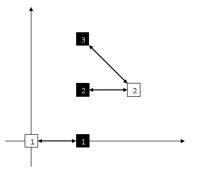
1 ≤ N ≤ 200, 1 ≤ M ≤ 50. Các tọa độ là nguyên và trị tuyệt đối không quá 1000.
Cho một mạng thông tin gồm n trạm và m đường nối hai chiều giữa các
trạm. Trạm s là trạm chỉ huy, trạm f là trạm điều khiển. Sau một lần bị tin tặc
tấn công lấy mất dữ liệu từ trạm chỉ huy chuyển đến trạm điều khiển, chỉ huy
mạng quyết định chia thông tin chuyển đi thành k đơn vị thông tin để chuyển theo
k đường đến trạm điều khiển. Mà hai đường truyền bất kỳ không được chung bất kỳ
một đường nào.
Hãy tìm cách truyền k đơn vị thông tin sao cho tổng chi phí
là nhỏ nhất.
-
Dòng đầu là n, m, k, s, f (n ≤ 100).
- m dòng tiếp là u, v, c cho biết có
đường từ u -> v và v -> u với chi phí là c.
-
Dòng đầu ghi –1 nếu không thể chuyển k đơn vị thông tin theo cách trên, ngược
lại ghi chi phi để chuyển.
- k dòng tiếp lần lượt ghi cách chuyển của từng
đơn vị thông tin. Số đầu là số lượng trạm trên đường truyền, tiếp đó là dãy các
trạm trên đường truyền (bắt đầu từ s, kết thúc ở f)
Chú ý: Phạm vi tính toán là Longint.
KWAY.INP |
KWAY.OUT |
|
8 11 3 1 8 1 2 1 1 4 1 1 5 1 2 3 1 2 4 1 2 7 1 3 8 1 3 6 1 3 5 1 6 8 1 7 8 1 |
11 4 1 2 3 8 5 1 5 3 6 8 5 1 4 2 7 8 |
Một hệ thống n máy tính (các máy tính được đánh số từ 1 đến n) được nối lại thành một mạng bởi m kênh nối, mỗi kênh nối hai máy nào đó và cho phép ta truyền tin một chiều từ máy này đến máy kia. Giả sử s và t là 2 máy tính trong mạng. Ta gọi đường truyền từ máy s đến máy t là một dãy các máy tính và các kênh nối chúng có dạng:
s = u1, e1, u2, ..., ui, ei, ui+1, ..., uk-1, ek-1, uk = t
trong đó u1, u2, ..., uk là các máy tính trong mạng, ei - kênh truyền tin từ máy ui đến máy ui+1. (i = 1, 2,... , k-1).
Mạng máy tính được gọi là thông suốt nếu như đối với hai máy u, v bất kỳ ta luôn có đường truyền tin từ u đến v và đường truyền tin từ v đến u. Mạng máy tính được gọi là hầu như thông suốt nếu đối với hai máy u, v bất kỳ, hoặc là có đường truyền từ u đến v, hoặc là có đường truyền từ v đến u.
Biết rằng mạng máy tính đã cho là hầu như thông suốt nhưng không thông suốt.
Yêu cầu: hãy xác định xem có thể bổ sung đúng một kênh truyền tin để biến mạng đã cho trở thành thông suốt được không?
Dữ liệu
Dòng đầu tiên ghi 2 số nguyên n và m.
Dòng thứ i trong số m dòng tiếp theo mô tả kênh nối thứ i bao gồm 2 số nguyên dương ui và vi cho biết kênh nối thứ i cho phép truyền tin từ máy ui đến máy vi, i=1,2,...,m.
Các số trên cùng một dòng được ghi cách nhau bởi dấu cách.
Kết qủa
Dòng đầu tiên ghi 'YES' nếu câu trả lời là khẳng định, ghi 'NO' nếu câu trả lời là phủ định.
Nếu câu trả lời là khẳng định thì dòng thứ hai ghi hai số nguyên dương u, v cách nhau bởi dấu cách cho biết cần bổ sung kênh truyền tin từ máy u đến máy v để biến mạng thành thông suốt.
Hạn chế
Trong tất cả các test, n ≤ 2000, m ≤ 30000.
Ví dụ
NHP.INP |
NHP.OUT |
|
3 2 1 2 2 3 |
YES 1 3 |
Xét bàn cờ vuông kích thước n×n. Các dòng được đánh số từ 1 đến n, từ dưới lên trên. Các cột được đánh số từ 1 đến n từ trái qua phải.
Ô nằm trên giao của dòng i và cột j được gọi là ô (i,j). Trên bàn cờ có m (0 ≤ m ≤ n) quân cờ. Với m > 0, quân cờ thứ i ở ô (ri, ci), i = 1,2,..., m. Không có hai quân cờ nào ở trên cùng một ô. Trong số các ô còn lại của bàn cờ, tại ô (p, q) có một quân tượng. Mỗi một nước đi, từ vị trí đang đứng quân tượng chỉ có thể di chuyển đến được những ô trên cùng đường chéo với nó mà trên đường đi không phải qua các ô đã có quân
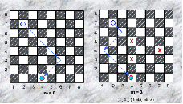
Cần phải đưa quân tượng từ ô xuất phát (p, q) về ô đích (s,t). Giả thiết là ở ô đích không có quân cờ. Nếu ngoài quân tượng không có quân nào khác trên bàn cờ thì chỉ có 2 trường hợp: hoặc là không thể tới được ô đích, hoặc là tới được sau không quá 2 nước đi (hình trái). Khi trên bàn cờ còn có các quân cờ khác, vấn đề sẽ không còn đơn giản như vậy.
Yêu cầu: Cho kích thước bàn cờ n, số quân cờ hiện có trên bàn cờ m và vị trí của chúng, ô xuất phát và ô đích của quân tượng. Hãy xác định số nước đi ít nhất cần thực hiện để đưa quân tượng về ô đích hoặc đưa ra số -1 nếu điều này không thể thực hiện được.
Dữ liệu vào:
Dòng đầu tiên chứa 6 số nguyên n, m, p, q, s, t.
Nếu m > 0 thì mỗi dòng thứ i trong m dòng tiếp theo chứa một cặp số nguyên ri , ci xác định vị trí quân thứ i.
Hai số liên tiếp trên cùng một dòng được ghi cách nhau ít nhất một dấu cách.
Kết quả ra:
Gồm 1 dòng duy nhất là số nước đi tìm được
Ví dụ:
QUANTUONG.INP |
QUANTUONG.OUT |
|
8 3 7 2 1 4 5 4 3 4 4 7 |
3 |
Hạn chế: Trong tất cả các test: 1 ≤ n ≤ 200. Có 60% số lượng test với n ≤ 20.
Một hệ thống n máy tính (các máy tính được đánh số từ 1 đến n) được nối lại thành một mạng bởi m kênh nối, mỗi kênh nối hai máy nào đó và cho phép truyền tin một chiều từ máy này đến máy kia. Ta gọi một mạch vòng của mạng đã cho là một dãy các máy tính và các kênh nối chúng có dạng:
u1, e1, u2, ...,ui, ei, ui+1, ..., uk-1, ek-1, uk, ek, u1
Trong đó u1, u2, ..., uk là các máy tính khác nhau trong mạng, ei – kênh truyền tin từ máy ui đến máy ui+1 (i = 1, 2, ..., k-1), ek là kênh truyền tin từ máy uk đến máy u1. Một kênh truyền tin trong mạng được gọi là kênh xung yếu nếu như bất cứ mạch vòng nào của mạng cũng đều chứa nó.
Yêu cầu: Hãy xác định tất cả các kênh xung yếu của mạng đã cho.
Dòng đầu tiên chứa 2 số nguyên dương n và m.
Dòng thứ i trong số m dòng tiếp theo mô tả kênh nối thứ i bao gồm hai số nguyên dương u i, vi cho biết kênh nối thứ i cho phép truyền tin từ máy ui đến máy vi.
Các số trên cùng một dòng được ghi cách nhau bởi dấu cách.
Dòng đầu tiên ghi số nguyên k là số lượng kênh xung yếu trong mạng đã cho. Ghi k = -1 nếu mạng không chứa kênh xung yếu.
Nếu k>0 thì mỗi dòng trong số k dòng tiếp theo ghi thông tin về một kênh xung yếu tìm được theo qui cách mô tả giống như trong file dữ liệu vào. Đồng thời các kênh được in ra theo thứ tự từ điển
XUNGYEU.INP |
XUNGYEU.OUT |
|
2 2 1 2 2 1 |
2 1 2 2 1 |
Trong tất cả các test: n ≤ 1000, m ≤ 20000. Có 50% số lượng test với n ≤ 200.
Trên một mạng lưới giao thông có n nút, các nút được đánh số từ 1 đến n và giữa hai nút bất kỳ có không quá một đường nối trực tiếp (đường nối trực tiếp là một đường hai chiều). Ta gọi đường đi từ nút s đến nút t là một dãy các nút và các đường nối trực tiếp có dạng:
s = u1, e1, u2,..., ui, ei, ui+1, ..., uk-1, ek-1, uk = t,
trong đó u1, u2, …, uk là các nút trong mạng lưới giao thông, ei là đường nối trực tiếp giữa nút ui và ui+1 (không có nút uj nào xuất hiện nhiều hơn một lần trong dãy trên, j = 1, 2, …, k).
Biết rằng mạng lưới giao thông được xét luôn có ít nhất một đường đi từ nút 1 đến nút n.
Một robot chứa đầy bình với w đơn vị năng lượng, cần đi từ trạm cứu hoả đặt tại nút 1 đến nơi xảy ra hoả hoạn ở nút n, trong thời gian ít nhất có thể. Thời gian và chi phí năng lượng để robot đi trên đường nối trực tiếp từ nút i đến nút j tương ứng là tij và cij (1 ≤ i, j ≤ n). Robot chỉ có thể đi được trên đường nối trực tiếp từ nút i đến nút j nếu năng lượng còn lại trong bình chứa không ít hơn cij (1 ≤ i, j ≤ n). Nếu robot đi đến một nút có trạm tiếp năng lượng (một nút có thể có hoặc không có trạm tiếp năng lượng) thì nó tự động được nạp đầy năng lượng vào bình chứa với thời gian nạp coi như không đáng kể.
Yêu cầu: Hãy xác định giá trị w nhỏ nhất để robot đi được trên một đường đi từ nút 1 đến nút n trong thời gian ít nhất.
Input
Dòng đầu tiên chứa một số nguyên dương n (2 ≤ n ≤ 500);
Dòng thứ hai chứa n số, trong đó số thứ j bằng 1 hoặc 0 tương ứng ở nút j có hoặc không có trạm tiếp năng lượng (j = 1, 2, …, n);
Dòng thứ ba chứa số nguyên dương m (m ≤ 30000) là số đường nối trực tiếp có trong mạng lưới giao thông;
Dòng thứ k trong số m dòng tiếp theo chứa 4 số nguyên dương i, j, tij, cij (tij, cij ≤ 10000) mô tả đường nối trực tiếp từ nút i đến nút j, thời gian và chi phí năng lượng tương ứng.
Hai số liên tiếp trên một dòng trong file dữ liệu cách nhau ít nhất một dấu cách.
Output
Ghi ra số nguyên dương w tìm được.
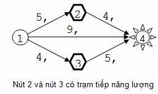Ví dụ:
NHP.INP |
NHP.OUT |
|
4 0 1 1 0 5 1 2 5 4 1 3 4 3 1 4 9 4 2 4 4 1 3 4 5 2 |
|
Nhảy lò cò là trò chơi dân gian của Việt Nam. Người trên hành tinh X cũng rất thích trò chơi này và họ đã cải biên trò chơi này như sau: Trên mặt phẳng vẽ n vòng tròn được đánh số từ 1 đến n. Tại vòng tròn i người ta điền số nguyên dương ai. Hai số trên hai vòng tròn tùy ý không nhất thiết phải khác nhau. Tiếp đến người ta vẽ các mũi tên, mỗi mũi tên hướng từ một vòng tròn đến một vòng tròn khác. Quy tắc vẽ mũi tên là: Nếu có ba số ai, aj, ak thỏa mãn ak = ai + aj thì vẽ mũi tên hướng từ vòng tròn i đến vòng tròn k và mũi tên hướng từ vòng tròn j đến vòng tròn k. Người chơi chỉ được di chuyển từ một vòng tròn đến một vòng tròn khác nếu có mũi tên xuất phát từ một trong số các vòng tròn, di chyển theo cách mũi tên đã vẽ để đi đến các vòng tròn khác. Người thắng cuộc sẽ là người tìm được cách di chuyển qua nhiều vòng tròn nhất.
Ví dụ: Với 5 vòng tròn và các số trong vòng tròn là 1, 2, 8, 3, 5, trò chơi được trình bày trong hình dưới đây:
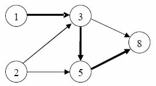
Khi đó có thể di chuyển được nhiều nhất qua 4 vòng tròn (tương ứng với đường di chuyển được tô đậm trên hình vẽ).
Yêu cầu
Hãy xác định xem trong trò chơi mô tả ở trên, nhiều nhất có thể di chuyển được qua bao nhiêu vòng tròn.
Dữ liệu
Dòng đầu chứa số nguyên n (3 ≤ n ≤ 1000);
Dòng thứ hai chứa dãy số nguyên dương a1, a2, ..., an (ai ≤ 109, i=1, 2,..., n).
Hai số liên tiếp trên một dòng được ghi cách nhau bởi dấu cách.
Kết quả
Ghi ra số lượng vòng tròn trên đường di chuyển tìm được.
Ràng buộc
60% số tests ứng với 60% số điểm của bài có 3 ≤ n ≤ 100.
Ví dụ
Dữ liệu:
5
1 2 8 3 5
Bản
đồ giao thông của hành tinh X bao gồm n thành phố được đánh số từ 1 đến n và m
đoạn đường một chiều nối các cặp thành phố, giữa hai thành phố bất kỳ có không
quá một đoạn đường cùng chiều nối chúng. Thành phố s là thủ đô của hành tinh, từ
đó có thể di chuyển theo các đoạn đường nối giữa các thành phố để đến bất cứ
thành phố nào trong số các thành phố còn lại. Thành phố t là một điểm du lịch ưa
thích của người dân thủ đô. Hàng năm có một lượng lớn người dân thủ đô đến nghỉ
ngơi tại điểm du lịch hấp dẫn này. Vì thế, trong các mùa du lịch ách tắc giao
thông trên đường đi từ s đến t thường xuyên xảy ra tại một số nút giao thông. Do
đó, Bộ Giao thông của hành tinh X muốn xác định các nút giao thông này. Ta nói
thành phố a ( a ≠ s và a ≠ t) là nút st-xung
yếu nếu mọi đường đi từ s đến t đều phải đi qua a.
Yêu cầu: Hãy xác định
số lượng các nút st-xung yếu.
Dữ liệu:
Dòng đầu tiên chứa 4 số nguyên dương n, m, s, t (3 ≤ n ≤ 104, m ≤ 105);
m dòng tiếp theo mô tả sơ đồ giao thông trên hành tinh X: Dòng thứ i chứa hai số nguyên ui, vi cho biết có đoạn đường một chiều đi từ thành phố ui đến thành phố i, i = 1, 2, ..., m. Các số liên tiếp trên cùng dòng được ghi cách nhau bởi ít nhất một dấu cách.
Kết quả
Một số nguyên duy nhất là số lượng nút st-xung yếu.
Ví dụ
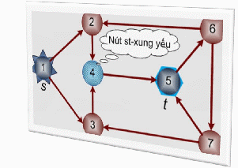
|
Dữ liệu |
Kết quả |
|
7 10 1 5 |
1 |
Ràng buộc: 60% số tests ứng với 60% số điểm của bài có 3 ≤ n ≤ 100.
Trong mạng xã hội, mỗi trang web được tổ chức trên một máy tính thành viên và cung cấp dịch vụ truy nhập tới một số trang web khác. Để truy nhập tới một trang web nào đó không có trong danh mục kết nối trực tiếp của mình, người dùng phải truy nhập tới trang web khác có kết nối với mình, dựa vào danh mục dịch vụ của trang web này để chuyển tới trang web khác theo tùy chọn, cứ như thế cho đến khi tới được trang web mình cần. Thời gian để truy nhập tới một trang web phụ thuộc chủ yếu và số lần mở trang web trong quá trình truy nhập. Như vậy, người dùng cần chủ động chọn lộ trình truy nhập hợp lí.
Sau một thời gian làm việc trên mạng, Sáng - một thành viên nhiệt thành đã tích lũy kinh nghiệm, tạo một cơ sở dữ liệu, cho biết từ một trang web có thể đi tới những trang web nào trong mạng. Trong cơ sở dữ liệu, các trang web được đánh số từ 1 đến n và có m bản ghi, mỗi bản ghi có dạng cặp có thứ tự (u, v) cho biết trang web u có kết nối tới trang web v ( 1 ≤ u, v ≤ n, u ≠ v). Cơ sở dữ liệu chưa được chuẩn hóa, vì vậy có thể chứa các cặp (u, v) giống nhau.
Trang web của Sáng có số hiệu là s. Dựa vào cơ sở dữ liệu, Sáng có thể xác định lộ trình truy nhập nhanh nhất (tức là số lần phải mở trang web là ít nhất) từ trang web s tới trang web u bất kì. Tuy vậy, ở mạng xã hội, mọi chuyện đều có thể xảy ra: một khu vực nào đó bị mất điện, máy của một thành viên bị hỏng, trang web đó đang bị đóng để nâng cấp, ... Kết quả là một vài trang web nào đó có thể tạm thời không hoạt động. Như vậy, nếu từ s có ít nhất hai lộ trình nhanh nhất khác nhau tới u thì khả năng thực hiện truy nhập được một cách nhanh nhất tới u là lớn hơn so với những trang web chỉ có duy nhất một lộ trình nhanh nhất. Hai lộ trình gọi là khác nhau nếu có ít nhất một trang web có ở lộ trình này mà không có ở lộ trình kia hoặc cả hai lộ trình cùng đi qua những trang web như nhau nhưng theo các trình tự khác nhau. Những trang web mà từ s tới đó có ít ra là hai lộ trình nhanh nhất khác nhau được gọi là ổn định đối với s. Trang web mà từ s không có lộ trình tới nó là không ổn định đối với s.
Ví dụ, với mạng nêu ở hình trên (n = 6, m = 9) các trang web 4 và 3 là ổn định với s = 1 (từ 1 tới 4 có 2 lộ trình nhanh nhất: 1 - 2 - 4 và 1 - 5 - 4, từ 1 tới 3 cũng có 2 lộ trình nhanh nhất: 1 - 2 - 4 - 3 và 1 - 5 - 4 - 3).
Cho các số nguyên dương n, m, s và m cặp số (u, v) xác định từ u có thể kết nối trực tiếp tới được v. Hãy xác định số lượng trang web ổn định đối với s.
Dòng đầu tiên chứa 3 số nguyên n, m và s (2 ≤ 10000, 1 ≤ m ≤ 50000, 1 ≤ s ≤ n).
Mỗi dòng trong m dòng tiếp theo chứa 2 số nguyên u và v (1 ≤ u, v ≤ n, u ≠ v).
Các số trên một dòng được ghi cách nhau ít nhất một dấu cách.
Một số nguyên - số trang web ổn định đối với s.
Input:
6 11 1
1 5
1 5
5 6
1 2
5 4
2 4
4 3
5 4
5 2
3 2
6 5
Output:
2
Một hệ thống gồm n máy tính đánh số từ 1 đến n được kết nối thành một mạng bởi m đoạn cáp mạng đánh số từ 1 đến m. Đoạn cáp mạng thứ i có thông lượng wi kết nối hai máy ui, vi cho phép truyền dữ liệu theo cả hai chiều giữa hai máy này.
Một dãy các máy x1, x2, …, xp trong đó giữa hai máy xj và xj+1 (j = 1, 2, …, p-1) có đoạn cáp nối được gọi là một đường truyền tin từ máy x1 tới máy xp. Thông lượng của đường truyền tin được xác định như là thông lượng nhỏ nhất trong số các thông lượng của các đoạn cáp mạng trên đường truyền. Giả thiết là mạng được kết nối sao cho có đường truyền tin giữa hai máy bất kì và giữa hai máy có không quá một đoạn cáp mạng nối chúng.
Người ta muốn nâng cấp mạng bằng cách tăng thông lượng của một số đoạn cáp nối trong mạng. Để tăng thông lượng của mỗi đoạn cáp mạng thêm một lượng d (d > 0) ta phải trả một chi phí đúng bằng d. Việc nâng cấp mạng phải đảm bảo là sau khi hoàn tất, thông lượng của mỗi đoạn cáp mạng i đều bằng thông lượng của đường truyền tin có thông lượng lớn nhất từ máy ui tới máy vi.
Yêu cầu: Tìm phương án nâng cấp các đoạn cáp mạng sao cho tổng chi phí nâng cấp là nhỏ nhất.
Dữ liệu:
Dòng thứ nhất: Chứa hai số nguyên dương n, m (n, m <= 10^5).
Dòng thứ i trong số m dòng tiếp theo chứa ba số nguyên dương
ui, vi, wi (wi <= 10^6),
i = 1, 2, …,
m.
Các số trên cùng một dòng được ghi cách nhau ít nhất một dấu cách.
Kết quả: ghi ra một số nguyên duy nhất là tổng chi phí nâng cấp theo phương án tìm được.
Ví dụ:
Dữ liệu
Kết quả
6 7
1 2 6
1
3 5
2 4 3
3 4 9
4 5 4
4 6 8
5 6 7
5
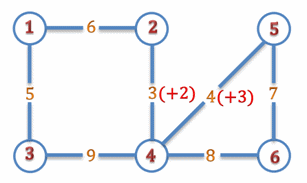
Ràng buộc: 50% số test ứng với 50% số điểm của bài có n <= 100.
Phân cụm là một bài toán có ý nghĩa ứng dụng quan trọng trong các lĩnh vực như học máy, khai phá dữ liệu, thu thập dữ liệu và đòi hỏi phân hoạch tập các điểm dữ liệu ra thành các nhóm sao cho các điểm trong cùng một nhóm là “gần nhau” và “cách xa” các nhóm khác. Trong bài này chúng ta xét một dạng đơn giản của bài toán phân cụm.
Cho tập gồm n đối tượng X = {x1, x2, ..., xn}, khoảng cách d(xi, xj) giữa mọi cặp xi xj và một số nguyên dương k (k n). Giả thiết là d(xi, xj) là các số nguyên dương, d(xi, xj) = d(xj, xi) và d(xi, xi) = 0, với mọi i, j = 1, 2, ..., n. Ta gọi một cách phân cụm là một cách phân hoạch tập X ra thành k tập con khác rỗng (mỗi tập con như vậy được gọi là một cụm). Cho C = {C1, C2, ..., Ck} là một cách phân cụm, ta gọi độ phân tách của cách phân cụm C (ký hiệu là (C )) là giá trị nhỏ nhất trong số các khoảng cách giữa hai phần tử bất kỳ thuộc hai cụm khác nhau, nghĩa là
(C ) = min {d(u,v): u Cp, v Cq , p q }.
Yêu cầu: Tìm cách phân cụm với độ phân tách là lớn nhất.
Dữ liệu: Vào từ file văn bản CLUSTER.INP:
Dòng đầu tiên chứa hai số nguyên n và k.
Dòng thứ i trong số n dòng tiếp theo ghi các số d(xi, x1), d(xi, x2), ..., d(xi, xn), i = 1, 2, ..., n.
Các số trên cùng một dòng được ghi cách nhau bởi dấu cách.
Kết quả: Ghi ra file văn bản CLUSTER.OUT độ phân tách của cách phân cụm tìm được.
Ví dụ:
|
CLUSTER.INP |
CLUSTER.OUT |
|
4 3 0 1 2 3 1 0 2 3 2 2 0 3 3 3 3 0 |
2 |
Hạn chế:
Trong tất cả các test: 1 n 200; d(xi, xj) 32000, i, j = 1, 2, ..., n.
Có 50% số lượng test với n 100.
Mê cung có dạng lưới ô vuông hình chữ nhật kích thước mxn, các dòng của lưới được đánh số từ 1 đến m từ trên xuống dưới, các cột được đánh số từ 1 đến n từ trái sang phải. Ô nằm trên giao của dòng i và cột j được gọi là ô (i,j). Mỗi ô là một phòng. Vách ngăn giữa hai phòng hoặc giữa phòng với phần bên ngoài có thể có hoặc không có cửa thông nhau. Mê cung được mô tả bởi bản đồ số B là bảng mxn số nguyên, trong đó thành phần ở vị trí giao của dòng i với cột j là Bij (0 ≤ Bij ≤ 4) cho biết số vách ngăn có cửa của ô (i,j). Thời gian đi từ một ô sang ô bên cạnh hoặc ra ngoài là 1, nếu vách ngăn tương ứng có cửa.
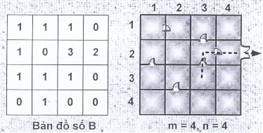
Yêu cầu: Cho biết m, n, bản đồ số B và (u, v) – toạ độ một ô nào đó trong mê cung. Hãy xác định một cách đặt cửa cho các phòng đảm bảo thỏa mãn bản đồ B và thời gian T để thoát ra khỏi mê cung từ phòng (u, v) là ít nhất. Biết rằng dữ liệu bản đồ số B đảm bảo có ít nhất một cách đặt cửa để thoát ra ngoài.
Dữ liệu vào
Dòng đầu tiên chứa 4 số nguyên m, n, u và v.
Dòng thứ i trong m dòng sau chứa n số nguyên Bi1, Bi2,. . ., Bin.
Các số trên cùng một dòng được phân tách nhau bởi dấu cách.
Kết qủa
Đưa ra số nguyên T.
Hạn chế
Trong tất cả các test: 2 ≤ m, n ≤ 50.
Có 50% số lượng test với m, n ≤ 25.
Ví dụ
Dữ liệu mẫu
4 4 3 3
1 1 1 0
1 0 3 2
1 1 1 0
0 1 0 0
Kết qủa
3
Để phòng vệ cho một trận địa có dạng lưới ô vuông m × n, Bộ chỉ huy quân sự đã tính toán về việc thiết lập các chốt phòng thủ theo khu vực, mỗi chốt sẽ được đặt tại một trong các ô vuông trên trận địa và mỗi ô vuông có không quá một chốt.
Giả sử các hàng ngang được đánh số từ 1 đến m theo trình tự từ trên xuống dưới và hàng dọc được đánh số từ 1 đến n theo trình tự từ trái sang phải. Ô nằm trên giao của hàng ngang i và hàng dọc j được gọi là ô (i,j).
Hệ thống phòng thủ cần phải bảo đảm mỗi hàng ngang, hàng dọc đều có đủ số lượng chốt cần thiết. Bên cạnh đó, dựa vào thông tin tình báo, các chuyên gia cũng tính toán được khả năng đánh phá của địch pij (pij<1000) vào từng ô (i,j) trên trận địa (pij càng lớn nghĩa là khả năng địch đánh phá ô (i,j) càng cao). Căn cứ vào đó, người chỉ huy sẽ bố trí các chốt phòng thủ.
Bạn được mời làm cố vấn quân sự, hãy xác định phương án đặt vị trí các chốt phòng thủ trên trận địa đảm bảo được các yêu cầu về số lượng chốt phòng thủ đồng thời sao cho tổng khả năng đánh phá của địch vào các vị trí được chọn là nhỏ nhất.
Dữ liệu vào từ file văn bản DEFEND.INP:
· Dòng đầu tiên chứa 2 số nguyên dương m, n (m, n ≤ 100),
· Dòng thứ 2 chứa m số nguyên không âm lần lượt là số lượng chốt cần có từ hàng ngang thứ 1 đến hàng ngang thứ m,
· Dòng thứ 3 chứa n số nguyên không âm lần lượt là số lượng chốt cần có từ hàng dọc thứ 1 đến hàng dọc thứ n,
· m dòng tiếp theo, mỗi dòng chứa n số nguyên không âm mô tả các giá trị pij.
Các số trên cùng một dòng cách nhau bởi một dấu cách.
Kết quả: ghi ra file văn bản DEFEND.OUT duy nhất số -1 trong trường hợp không có phương án lập hệ thống chốt phòng thủ. Ngược lại, ghi ra số nguyên là tổng khả năng đánh phá của địch vào các vị trí được chọn tương ứng với phương án tìm được.
Ví dụ:
DEFEND.INP
DEFEND.OUT
4 4
2 2 2 2
2 2 2 2
1 1 8 8
9 1 10 2
5 5 2 3
2 4 10 10
22
Có N trung tâm tư vấn (đánh số từ 1 đến N), mỗi trung tâm có khả năng tư vấn về một số vấn đề. Trong một ngày làm việc, mỗi trung tâm chỉ tiếp được một số lượng khách nhất định.
Một ngày cuối năm, có M khách (đánh số từ 1 đến M), mỗi khách cần tư vấn về một vấn đề. Khách chỉ có thể đến trung tâm có khả năng tư vấn về vấn đề của mình.
Bạn hãy xác định giúp cần ít nhất bao nhiêu trung tâm hoạt động để có thể tư vấn cho tất cả các khách trong ngày cuối năm?
Dữ liệu vào từ file văn bản ADVICE.INP gồm:
Dòng đầu ghi 2 số M (1 ≤ M ≤ 500), N (1 ≤ N ≤ 50),
Dòng tiếp ghi M chữ cái in hoa liên tiếp, trong đó chữ thứ i mô tả vấn đề cần tư vấn của khách i,
Dòng thứ j trong N dòng tiếp theo, ghi thông tin của trung tâm j, gồm một số nguyên là lượng khách cho phép tư vấn trong ngày (không quá 50), sau đó là một dấu cách, tiếp sau là một dãy các chữ cái in hoa liền nhau mô tả dãy vấn đề mà trung tâm có thể tư vấn.
Các số trên một dòng cách nhau bởi một dấu cách. Dữ liệu vào luôn đảm bảo tất cả các khách đều được tư vấn.
Kết quả: ghi ra file ADVICE.OUT một số nguyên dương là số trung tâm ít nhất tìm được.
ADVICE.INP
ADVICE.OUT
8 4
BNFQISNS
40 QIC
35 UPSF
45 FPHBU
15 WPSCNG
3